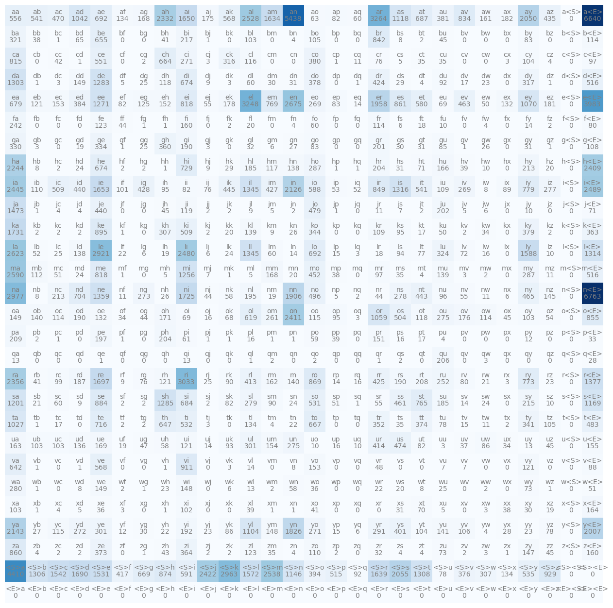
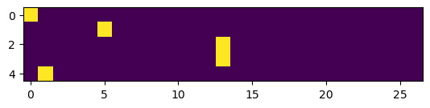

import torch
from torch import Generator
import torch.nn.functional as F
import matplotlib.pyplot as plt
%matplotlib inlinemakemore: autoregressive (using past data to predict future behavior) character-level language model that “makes more” of things that you give it
Example: can learn to make more names (or things that sound name-like) if you train makemore on a dataset of names:
https://github.com/karpathy/makemore/blob/master/names.txt
- each line is an example (e.g. “iris”)
- within each example, treat it as a sequence of individual characters (the letters in “iris”)
#read in everything into one giant string -> splitlines to get a list of strings
words = open('../z2h_data/names.txt', 'r').read().splitlines()words[:10]['emma',
'olivia',
'ava',
'isabella',
'sophia',
'charlotte',
'mia',
'amelia',
'harper',
'evelyn']len(words) #around 32k names32033min(len(word) for word in words) #shortest is 2 characters2max(len(word) for word in words) #longest: 1515Character-level language model: predicting next character in sequence given already some concrete sequence before
What does the existence of a word (e.g. “isabella”) in this dataset tell us?
- the character “i” is a very likely character to come first in sequence of a name
- character “s” is likely to come after “i”
- …“a” after “is”
- …“b” after “isa”
- …
- one more example: after “isabella” the word is likely to end
*a lot of info packed into this statistical structure of what’s likely to followy in character sequence!
Start by building bigram language model: works only w/ 2 characters at a time
- only looking at one character (given)
- try to predict next character in sequence
- very small local structure (just looking at previous to predict next)
#ex
for word in words[:1]:
#iterate 2 characters at a time -- slide across (zip will halt+return when shorter list is exhausted)
for ch1, ch2 in zip(word, word[1:]):
print(ch1, ch2)e m
m m
m aWhat we see from this above word: “e” is very likely to come first; “a” very likely to come last
zipwill halt and return when we exhaust the shorter list- need to find a way to mark beginning and end so that everything is fully “paired”
Printed below: we start with the bigram of the special start character and “e”, end with the bigram of “a” an the special end character
for word in words[:1]:
#special array of characters
#hallucinate special start token
#list(w) to get list of individual characters instead of just a string of whole word
chs = ['<S>'] + list(word) + ['<E>']
for ch1, ch2 in zip(chs, chs[1:]):
print(ch1, ch2)<S> e
e m
m m
m a
a <E>#now with more words
for word in words[:3]:
chs = ['<S>'] + list(word) + ['<E>']
for ch1, ch2 in zip(chs, chs[1:]):
print(ch1, ch2) #print individual character bigrams<S> e
e m
m m
m a
a <E>
<S> o
o l
l i
i v
v i
i a
a <E>
<S> a
a v
v a
a <E>To learn statistics about which characters are likely to follow other characters, simplest way is to count. i.e. count how often any one of these combinations occurs in training set in these words
- need dictionary to maintain counts to map bigrams (tuple of character 1, character 2) to their frequency
bigram_counts = {}
for word in words:
chs = ['<S>'] + list(word) + ['<E>']
for ch1, ch2 in zip(chs, chs[1:]):
bigram = (ch1, ch2)
bigram_counts[bigram] = bigram_counts.get(bigram, 0)+1#alternative method (not from demo)
def sort_dict(unsorted_dict):
"""sort dictionary using swapped keys and values"""
unsorted_list = [(value, key) for (key, value) in unsorted_dict.items()]
sorted_list = sorted(unsorted_list, reverse=True)
sorted_dict = {key:value for value, key in sorted_list}
return sorted_dictsorted(bigram_counts.items(), key = lambda kv: -kv[1]) #list with entries from most frequent to least[(('n', '<E>'), 6763),
(('a', '<E>'), 6640),
(('a', 'n'), 5438),
(('<S>', 'a'), 4410),
(('e', '<E>'), 3983),
(('a', 'r'), 3264),
(('e', 'l'), 3248),
(('r', 'i'), 3033),
(('n', 'a'), 2977),
(('<S>', 'k'), 2963),
(('l', 'e'), 2921),
(('e', 'n'), 2675),
(('l', 'a'), 2623),
(('m', 'a'), 2590),
(('<S>', 'm'), 2538),
(('a', 'l'), 2528),
(('i', '<E>'), 2489),
(('l', 'i'), 2480),
(('i', 'a'), 2445),
(('<S>', 'j'), 2422),
(('o', 'n'), 2411),
(('h', '<E>'), 2409),
(('r', 'a'), 2356),
(('a', 'h'), 2332),
(('h', 'a'), 2244),
(('y', 'a'), 2143),
(('i', 'n'), 2126),
(('<S>', 's'), 2055),
(('a', 'y'), 2050),
(('y', '<E>'), 2007),
(('e', 'r'), 1958),
(('n', 'n'), 1906),
(('y', 'n'), 1826),
(('k', 'a'), 1731),
(('n', 'i'), 1725),
(('r', 'e'), 1697),
(('<S>', 'd'), 1690),
(('i', 'e'), 1653),
(('a', 'i'), 1650),
(('<S>', 'r'), 1639),
(('a', 'm'), 1634),
(('l', 'y'), 1588),
(('<S>', 'l'), 1572),
(('<S>', 'c'), 1542),
(('<S>', 'e'), 1531),
(('j', 'a'), 1473),
(('r', '<E>'), 1377),
(('n', 'e'), 1359),
(('l', 'l'), 1345),
(('i', 'l'), 1345),
(('i', 's'), 1316),
(('l', '<E>'), 1314),
(('<S>', 't'), 1308),
(('<S>', 'b'), 1306),
(('d', 'a'), 1303),
(('s', 'h'), 1285),
(('d', 'e'), 1283),
(('e', 'e'), 1271),
(('m', 'i'), 1256),
(('s', 'a'), 1201),
(('s', '<E>'), 1169),
(('<S>', 'n'), 1146),
(('a', 's'), 1118),
(('y', 'l'), 1104),
(('e', 'y'), 1070),
(('o', 'r'), 1059),
(('a', 'd'), 1042),
(('t', 'a'), 1027),
(('<S>', 'z'), 929),
(('v', 'i'), 911),
(('k', 'e'), 895),
(('s', 'e'), 884),
(('<S>', 'h'), 874),
(('r', 'o'), 869),
(('e', 's'), 861),
(('z', 'a'), 860),
(('o', '<E>'), 855),
(('i', 'r'), 849),
(('b', 'r'), 842),
(('a', 'v'), 834),
(('m', 'e'), 818),
(('e', 'i'), 818),
(('c', 'a'), 815),
(('i', 'y'), 779),
(('r', 'y'), 773),
(('e', 'm'), 769),
(('s', 't'), 765),
(('h', 'i'), 729),
(('t', 'e'), 716),
(('n', 'd'), 704),
(('l', 'o'), 692),
(('a', 'e'), 692),
(('a', 't'), 687),
(('s', 'i'), 684),
(('e', 'a'), 679),
(('d', 'i'), 674),
(('h', 'e'), 674),
(('<S>', 'g'), 669),
(('t', 'o'), 667),
(('c', 'h'), 664),
(('b', 'e'), 655),
(('t', 'h'), 647),
(('v', 'a'), 642),
(('o', 'l'), 619),
(('<S>', 'i'), 591),
(('i', 'o'), 588),
(('e', 't'), 580),
(('v', 'e'), 568),
(('a', 'k'), 568),
(('a', 'a'), 556),
(('c', 'e'), 551),
(('a', 'b'), 541),
(('i', 't'), 541),
(('<S>', 'y'), 535),
(('t', 'i'), 532),
(('s', 'o'), 531),
(('m', '<E>'), 516),
(('d', '<E>'), 516),
(('<S>', 'p'), 515),
(('i', 'c'), 509),
(('k', 'i'), 509),
(('o', 's'), 504),
(('n', 'o'), 496),
(('t', '<E>'), 483),
(('j', 'o'), 479),
(('u', 's'), 474),
(('a', 'c'), 470),
(('n', 'y'), 465),
(('e', 'v'), 463),
(('s', 's'), 461),
(('m', 'o'), 452),
(('i', 'k'), 445),
(('n', 't'), 443),
(('i', 'd'), 440),
(('j', 'e'), 440),
(('a', 'z'), 435),
(('i', 'g'), 428),
(('i', 'm'), 427),
(('r', 'r'), 425),
(('d', 'r'), 424),
(('<S>', 'f'), 417),
(('u', 'r'), 414),
(('r', 'l'), 413),
(('y', 's'), 401),
(('<S>', 'o'), 394),
(('e', 'd'), 384),
(('a', 'u'), 381),
(('c', 'o'), 380),
(('k', 'y'), 379),
(('d', 'o'), 378),
(('<S>', 'v'), 376),
(('t', 't'), 374),
(('z', 'e'), 373),
(('z', 'i'), 364),
(('k', '<E>'), 363),
(('g', 'h'), 360),
(('t', 'r'), 352),
(('k', 'o'), 344),
(('t', 'y'), 341),
(('g', 'e'), 334),
(('g', 'a'), 330),
(('l', 'u'), 324),
(('b', 'a'), 321),
(('d', 'y'), 317),
(('c', 'k'), 316),
(('<S>', 'w'), 307),
(('k', 'h'), 307),
(('u', 'l'), 301),
(('y', 'e'), 301),
(('y', 'r'), 291),
(('m', 'y'), 287),
(('h', 'o'), 287),
(('w', 'a'), 280),
(('s', 'l'), 279),
(('n', 's'), 278),
(('i', 'z'), 277),
(('u', 'n'), 275),
(('o', 'u'), 275),
(('n', 'g'), 273),
(('y', 'd'), 272),
(('c', 'i'), 271),
(('y', 'o'), 271),
(('i', 'v'), 269),
(('e', 'o'), 269),
(('o', 'm'), 261),
(('r', 'u'), 252),
(('f', 'a'), 242),
(('b', 'i'), 217),
(('s', 'y'), 215),
(('n', 'c'), 213),
(('h', 'y'), 213),
(('p', 'a'), 209),
(('r', 't'), 208),
(('q', 'u'), 206),
(('p', 'h'), 204),
(('h', 'r'), 204),
(('j', 'u'), 202),
(('g', 'r'), 201),
(('p', 'e'), 197),
(('n', 'l'), 195),
(('y', 'i'), 192),
(('g', 'i'), 190),
(('o', 'd'), 190),
(('r', 's'), 190),
(('r', 'd'), 187),
(('h', 'l'), 185),
(('s', 'u'), 185),
(('a', 'x'), 182),
(('e', 'z'), 181),
(('e', 'k'), 178),
(('o', 'v'), 176),
(('a', 'j'), 175),
(('o', 'h'), 171),
(('u', 'e'), 169),
(('m', 'm'), 168),
(('a', 'g'), 168),
(('h', 'u'), 166),
(('x', '<E>'), 164),
(('u', 'a'), 163),
(('r', 'm'), 162),
(('a', 'w'), 161),
(('f', 'i'), 160),
(('z', '<E>'), 160),
(('u', '<E>'), 155),
(('u', 'm'), 154),
(('e', 'c'), 153),
(('v', 'o'), 153),
(('e', 'h'), 152),
(('p', 'r'), 151),
(('d', 'd'), 149),
(('o', 'a'), 149),
(('w', 'e'), 149),
(('w', 'i'), 148),
(('y', 'm'), 148),
(('z', 'y'), 147),
(('n', 'z'), 145),
(('y', 'u'), 141),
(('r', 'n'), 140),
(('o', 'b'), 140),
(('k', 'l'), 139),
(('m', 'u'), 139),
(('l', 'd'), 138),
(('h', 'n'), 138),
(('u', 'd'), 136),
(('<S>', 'x'), 134),
(('t', 'l'), 134),
(('a', 'f'), 134),
(('o', 'e'), 132),
(('e', 'x'), 132),
(('e', 'g'), 125),
(('f', 'e'), 123),
(('z', 'l'), 123),
(('u', 'i'), 121),
(('v', 'y'), 121),
(('e', 'b'), 121),
(('r', 'h'), 121),
(('j', 'i'), 119),
(('o', 't'), 118),
(('d', 'h'), 118),
(('h', 'm'), 117),
(('c', 'l'), 116),
(('o', 'o'), 115),
(('y', 'c'), 115),
(('o', 'w'), 114),
(('o', 'c'), 114),
(('f', 'r'), 114),
(('b', '<E>'), 114),
(('m', 'b'), 112),
(('z', 'o'), 110),
(('i', 'b'), 110),
(('i', 'u'), 109),
(('k', 'r'), 109),
(('g', '<E>'), 108),
(('y', 'v'), 106),
(('t', 'z'), 105),
(('b', 'o'), 105),
(('c', 'y'), 104),
(('y', 't'), 104),
(('u', 'b'), 103),
(('u', 'c'), 103),
(('x', 'a'), 103),
(('b', 'l'), 103),
(('o', 'y'), 103),
(('x', 'i'), 102),
(('i', 'f'), 101),
(('r', 'c'), 99),
(('c', '<E>'), 97),
(('m', 'r'), 97),
(('n', 'u'), 96),
(('o', 'p'), 95),
(('i', 'h'), 95),
(('k', 's'), 95),
(('l', 's'), 94),
(('u', 'k'), 93),
(('<S>', 'q'), 92),
(('d', 'u'), 92),
(('s', 'm'), 90),
(('r', 'k'), 90),
(('i', 'x'), 89),
(('v', '<E>'), 88),
(('y', 'k'), 86),
(('u', 'w'), 86),
(('g', 'u'), 85),
(('b', 'y'), 83),
(('e', 'p'), 83),
(('g', 'o'), 83),
(('s', 'k'), 82),
(('u', 't'), 82),
(('a', 'p'), 82),
(('e', 'f'), 82),
(('i', 'i'), 82),
(('r', 'v'), 80),
(('f', '<E>'), 80),
(('t', 'u'), 78),
(('y', 'z'), 78),
(('<S>', 'u'), 78),
(('l', 't'), 77),
(('r', 'g'), 76),
(('c', 'r'), 76),
(('i', 'j'), 76),
(('w', 'y'), 73),
(('z', 'u'), 73),
(('l', 'v'), 72),
(('h', 't'), 71),
(('j', '<E>'), 71),
(('x', 't'), 70),
(('o', 'i'), 69),
(('e', 'u'), 69),
(('o', 'k'), 68),
(('b', 'd'), 65),
(('a', 'o'), 63),
(('p', 'i'), 61),
(('s', 'c'), 60),
(('d', 'l'), 60),
(('l', 'm'), 60),
(('a', 'q'), 60),
(('f', 'o'), 60),
(('p', 'o'), 59),
(('n', 'k'), 58),
(('w', 'n'), 58),
(('u', 'h'), 58),
(('e', 'j'), 55),
(('n', 'v'), 55),
(('s', 'r'), 55),
(('o', 'z'), 54),
(('i', 'p'), 53),
(('l', 'b'), 52),
(('i', 'q'), 52),
(('w', '<E>'), 51),
(('m', 'c'), 51),
(('s', 'p'), 51),
(('e', 'w'), 50),
(('k', 'u'), 50),
(('v', 'r'), 48),
(('u', 'g'), 47),
(('o', 'x'), 45),
(('u', 'z'), 45),
(('z', 'z'), 45),
(('j', 'h'), 45),
(('b', 'u'), 45),
(('o', 'g'), 44),
(('n', 'r'), 44),
(('f', 'f'), 44),
(('n', 'j'), 44),
(('z', 'h'), 43),
(('c', 'c'), 42),
(('r', 'b'), 41),
(('x', 'o'), 41),
(('b', 'h'), 41),
(('p', 'p'), 39),
(('x', 'l'), 39),
(('h', 'v'), 39),
(('b', 'b'), 38),
(('m', 'p'), 38),
(('x', 'x'), 38),
(('u', 'v'), 37),
(('x', 'e'), 36),
(('w', 'o'), 36),
(('c', 't'), 35),
(('z', 'm'), 35),
(('t', 's'), 35),
(('m', 's'), 35),
(('c', 'u'), 35),
(('o', 'f'), 34),
(('u', 'x'), 34),
(('k', 'w'), 34),
(('p', '<E>'), 33),
(('g', 'l'), 32),
(('z', 'r'), 32),
(('d', 'n'), 31),
(('g', 't'), 31),
(('g', 'y'), 31),
(('h', 's'), 31),
(('x', 's'), 31),
(('g', 's'), 30),
(('x', 'y'), 30),
(('y', 'g'), 30),
(('d', 'm'), 30),
(('d', 's'), 29),
(('h', 'k'), 29),
(('y', 'x'), 28),
(('q', '<E>'), 28),
(('g', 'n'), 27),
(('y', 'b'), 27),
(('g', 'w'), 26),
(('n', 'h'), 26),
(('k', 'n'), 26),
(('g', 'g'), 25),
(('d', 'g'), 25),
(('l', 'c'), 25),
(('r', 'j'), 25),
(('w', 'u'), 25),
(('l', 'k'), 24),
(('m', 'd'), 24),
(('s', 'w'), 24),
(('s', 'n'), 24),
(('h', 'd'), 24),
(('w', 'h'), 23),
(('y', 'j'), 23),
(('y', 'y'), 23),
(('r', 'z'), 23),
(('d', 'w'), 23),
(('w', 'r'), 22),
(('t', 'n'), 22),
(('l', 'f'), 22),
(('y', 'h'), 22),
(('r', 'w'), 21),
(('s', 'b'), 21),
(('m', 'n'), 20),
(('f', 'l'), 20),
(('w', 's'), 20),
(('k', 'k'), 20),
(('h', 'z'), 20),
(('g', 'd'), 19),
(('l', 'h'), 19),
(('n', 'm'), 19),
(('x', 'z'), 19),
(('u', 'f'), 19),
(('f', 't'), 18),
(('l', 'r'), 18),
(('p', 't'), 17),
(('t', 'c'), 17),
(('k', 't'), 17),
(('d', 'v'), 17),
(('u', 'p'), 16),
(('p', 'l'), 16),
(('l', 'w'), 16),
(('p', 's'), 16),
(('o', 'j'), 16),
(('r', 'q'), 16),
(('y', 'p'), 15),
(('l', 'p'), 15),
(('t', 'v'), 15),
(('r', 'p'), 14),
(('l', 'n'), 14),
(('e', 'q'), 14),
(('f', 'y'), 14),
(('s', 'v'), 14),
(('u', 'j'), 14),
(('v', 'l'), 14),
(('q', 'a'), 13),
(('u', 'y'), 13),
(('q', 'i'), 13),
(('w', 'l'), 13),
(('p', 'y'), 12),
(('y', 'f'), 12),
(('c', 'q'), 11),
(('j', 'r'), 11),
(('n', 'w'), 11),
(('n', 'f'), 11),
(('t', 'w'), 11),
(('m', 'z'), 11),
(('u', 'o'), 10),
(('f', 'u'), 10),
(('l', 'z'), 10),
(('h', 'w'), 10),
(('u', 'q'), 10),
(('j', 'y'), 10),
(('s', 'z'), 10),
(('s', 'd'), 9),
(('j', 'l'), 9),
(('d', 'j'), 9),
(('k', 'm'), 9),
(('r', 'f'), 9),
(('h', 'j'), 9),
(('v', 'n'), 8),
(('n', 'b'), 8),
(('i', 'w'), 8),
(('h', 'b'), 8),
(('b', 's'), 8),
(('w', 't'), 8),
(('w', 'd'), 8),
(('v', 'v'), 7),
(('v', 'u'), 7),
(('j', 's'), 7),
(('m', 'j'), 7),
(('f', 's'), 6),
(('l', 'g'), 6),
(('l', 'j'), 6),
(('j', 'w'), 6),
(('n', 'x'), 6),
(('y', 'q'), 6),
(('w', 'k'), 6),
(('g', 'm'), 6),
(('x', 'u'), 5),
(('m', 'h'), 5),
(('m', 'l'), 5),
(('j', 'm'), 5),
(('c', 's'), 5),
(('j', 'v'), 5),
(('n', 'p'), 5),
(('d', 'f'), 5),
(('x', 'd'), 5),
(('z', 'b'), 4),
(('f', 'n'), 4),
(('x', 'c'), 4),
(('m', 't'), 4),
(('t', 'm'), 4),
(('z', 'n'), 4),
(('z', 't'), 4),
(('p', 'u'), 4),
(('c', 'z'), 4),
(('b', 'n'), 4),
(('z', 's'), 4),
(('f', 'w'), 4),
(('d', 't'), 4),
(('j', 'd'), 4),
(('j', 'c'), 4),
(('y', 'w'), 4),
(('v', 'k'), 3),
(('x', 'w'), 3),
(('t', 'j'), 3),
(('c', 'j'), 3),
(('q', 'w'), 3),
(('g', 'b'), 3),
(('o', 'q'), 3),
(('r', 'x'), 3),
(('d', 'c'), 3),
(('g', 'j'), 3),
(('x', 'f'), 3),
(('z', 'w'), 3),
(('d', 'k'), 3),
(('u', 'u'), 3),
(('m', 'v'), 3),
(('c', 'x'), 3),
(('l', 'q'), 3),
(('p', 'b'), 2),
(('t', 'g'), 2),
(('q', 's'), 2),
(('t', 'x'), 2),
(('f', 'k'), 2),
(('b', 't'), 2),
(('j', 'n'), 2),
(('k', 'c'), 2),
(('z', 'k'), 2),
(('s', 'j'), 2),
(('s', 'f'), 2),
(('z', 'j'), 2),
(('n', 'q'), 2),
(('f', 'z'), 2),
(('h', 'g'), 2),
(('w', 'w'), 2),
(('k', 'j'), 2),
(('j', 'k'), 2),
(('w', 'm'), 2),
(('z', 'c'), 2),
(('z', 'v'), 2),
(('w', 'f'), 2),
(('q', 'm'), 2),
(('k', 'z'), 2),
(('j', 'j'), 2),
(('z', 'p'), 2),
(('j', 't'), 2),
(('k', 'b'), 2),
(('m', 'w'), 2),
(('h', 'f'), 2),
(('c', 'g'), 2),
(('t', 'f'), 2),
(('h', 'c'), 2),
(('q', 'o'), 2),
(('k', 'd'), 2),
(('k', 'v'), 2),
(('s', 'g'), 2),
(('z', 'd'), 2),
(('q', 'r'), 1),
(('d', 'z'), 1),
(('p', 'j'), 1),
(('q', 'l'), 1),
(('p', 'f'), 1),
(('q', 'e'), 1),
(('b', 'c'), 1),
(('c', 'd'), 1),
(('m', 'f'), 1),
(('p', 'n'), 1),
(('w', 'b'), 1),
(('p', 'c'), 1),
(('h', 'p'), 1),
(('f', 'h'), 1),
(('b', 'j'), 1),
(('f', 'g'), 1),
(('z', 'g'), 1),
(('c', 'p'), 1),
(('p', 'k'), 1),
(('p', 'm'), 1),
(('x', 'n'), 1),
(('s', 'q'), 1),
(('k', 'f'), 1),
(('m', 'k'), 1),
(('x', 'h'), 1),
(('g', 'f'), 1),
(('v', 'b'), 1),
(('j', 'p'), 1),
(('g', 'z'), 1),
(('v', 'd'), 1),
(('d', 'b'), 1),
(('v', 'h'), 1),
(('h', 'h'), 1),
(('g', 'v'), 1),
(('d', 'q'), 1),
(('x', 'b'), 1),
(('w', 'z'), 1),
(('h', 'q'), 1),
(('j', 'b'), 1),
(('x', 'm'), 1),
(('w', 'g'), 1),
(('t', 'b'), 1),
(('z', 'x'), 1)]Want to store this info in 2d array:
- rows: first character of bigram
- columns: second character
- each entry = how often that first character follows second character in this dataset
can use Tensors w/ PyTorch
#create a 3x5 tensor of zeros
a = torch.zeros((3, 5))
atensor([[0., 0., 0., 0., 0.],
[0., 0., 0., 0., 0.],
[0., 0., 0., 0., 0.]])a.dtypetorch.float32By default, a.dtype (data type) is .float32. This can be changed:
#32-bit integers
a = torch.zeros((3, 5), dtype=torch.int32)
atensor([[0, 0, 0, 0, 0],
[0, 0, 0, 0, 0],
[0, 0, 0, 0, 0]], dtype=torch.int32)Tensors allow us to easily manipulate any of the individual entries.
a[1, 3] = 1
atensor([[0, 0, 0, 0, 0],
[0, 0, 0, 1, 0],
[0, 0, 0, 0, 0]], dtype=torch.int32)a[1, 3] += 1
atensor([[0, 0, 0, 0, 0],
[0, 0, 0, 2, 0],
[0, 0, 0, 0, 0]], dtype=torch.int32)a[0, 0] = 5
atensor([[5, 0, 0, 0, 0],
[0, 0, 0, 2, 0],
[0, 0, 0, 0, 0]], dtype=torch.int32)26 letters in the alphabet+2 special characters (start/end) = 28
Need to be able to index integers for the characters – construct a character array:
N = torch.zeros((28, 28), dtype=torch.int32)chars = sorted(list(set(''.join(words))))
#s (string) to I (integer) mapping
char_to_id = {char:id for id, char in enumerate(chars)}
#manually map special chars
char_to_id['<S>'] = 26
char_to_id['<E>'] = 27for word in words:
chs = ['<S>'] + list(word) + ['<E>']
for ch1, ch2 in zip(chs, chs[1:]):
id1 = char_to_id[ch1]
id2 = char_to_id[ch2]
N[id1, id2] += 1plt.imshow(N)<matplotlib.image.AxesImage at 0x12f783010>
Above: a bit ugly
to make a nicer visualization, first reversing our mappings so we can reverse our array and label w/ characters we want
id_to_char = {id:char for char, id in char_to_id.items()}plt.figure(figsize=(16,16))
plt.imshow(N, cmap='Blues')
for i in range(28):
for j in range(28):
chstr = id_to_char[i] + id_to_char[j] #i to j (char 1 to char 2)
plt.text(j, i, chstr, ha="center", va="bottom", color='gray')
#.item() since we are indexing tensors and want individual integer
plt.text(j, i, N[i, j].item(), ha="center", va="top", color='gray')
plt.axis('off')(-0.5, 27.5, 27.5, -0.5)
The issue here – we have an extra column and extra row since the start character will never be the second character of a bigram; end character will never be the first character of a bigram. The only exception if there is a word with no letters and the start char follows end char.
To remedy this:
N = torch.zeros((27, 27), dtype=torch.int32)chars = sorted(list(set(''.join(words))))
char_to_id = {char:id+1 for id, char in enumerate(chars)}
char_to_id['.'] = 0 #offset all other letters
id_to_char = {id:char for char, id in char_to_id.items()}for word in words:
chs = ['.'] + list(word) + ['.']
for ch1, ch2 in zip(chs, chs[1:]):
id1 = char_to_id[ch1]
id2 = char_to_id[ch2]
N[id1, id2] += 1plt.figure(figsize=(16,16))
plt.imshow(N, cmap='Blues')
for i in range(27):
for j in range(27):
chstr = id_to_char[i] + id_to_char[j] #i to j (char 1 to char 2)
plt.text(j, i, chstr, ha="center", va="bottom", color='gray')
#.item() since we are indexing tensors and want individual integer
plt.text(j, i, N[i, j].item(), ha="center", va="top", color='gray')
plt.axis('off')(-0.5, 26.5, 26.5, -0.5)
- along first row: characters that start a word
- along first column: characters that end word
- in between: what characters follow each other
This counts array has all info necessary for us to sample from for our bigram model. Start following these probabilities and sample from these counts.
Ex:
use first row to see how likely the different characters are to start a word:
N[0]tensor([ 0, 4410, 1306, 1542, 1690, 1531, 417, 669, 874, 591, 2422, 2963,
1572, 2538, 1146, 394, 515, 92, 1639, 2055, 1308, 78, 376, 307,
134, 535, 929], dtype=torch.int32)Take frequency vector and convert to float so that we can normalize these counts (and turn into probability); frequency \(\rightarrow\) probability
p = N[0].float()
p = p/p.sum()
p #probability for any single character to be the first in a wordtensor([0.0000, 0.1377, 0.0408, 0.0481, 0.0528, 0.0478, 0.0130, 0.0209, 0.0273,
0.0184, 0.0756, 0.0925, 0.0491, 0.0792, 0.0358, 0.0123, 0.0161, 0.0029,
0.0512, 0.0642, 0.0408, 0.0024, 0.0117, 0.0096, 0.0042, 0.0167, 0.0290])Now we get a probability distribution vector p.
Want to sample from this distribution – use torch.multinomial to return samples from a multinomial probability distribution
- use
torch.Generatorto make this deterministic/seed it for reproducible reasons – using this generator object can always give you the same random numbers
#ex
g = Generator().manual_seed(2147483647)
p = torch.rand(3, generator=g)
p = p/p.sum()
p #can draw reproducible samplestensor([0.6064, 0.3033, 0.0903])torch.multinomial will take a tensor of probability distributions
- we can ask it for a number of samples (e.g. 100 samples)
- can specify
replacement=Trueif we want to sample with replacement (default is w/o replacement)
looking at our tensor prob distribution, expect to see a lot of 0’s since its probability is 0.6064, half as many 1’s, very few 2’s
torch.multinomial(p, num_samples=100, replacement=True, generator=g)tensor([1, 1, 2, 0, 0, 2, 1, 1, 0, 0, 0, 1, 1, 0, 0, 1, 1, 0, 0, 1, 0, 2, 0, 0,
1, 0, 0, 1, 0, 0, 0, 1, 1, 1, 0, 1, 1, 0, 0, 1, 1, 1, 0, 1, 1, 0, 1, 1,
0, 2, 0, 0, 0, 0, 0, 0, 0, 0, 0, 0, 1, 1, 0, 0, 0, 0, 0, 0, 0, 0, 1, 0,
0, 1, 0, 0, 0, 0, 0, 0, 0, 1, 2, 0, 0, 0, 0, 0, 0, 1, 0, 0, 2, 0, 1, 0,
0, 1, 1, 1])Now taking a sample of 1 from the original frequency vector
g = Generator().manual_seed(2147483647)
#tensor that wraps 10 -- need `.item()` to get integer
ix = torch.multinomial(p, num_samples=1, replacement=True, generator=g).item()
#check which character we're sampling w/ dict
id_to_char[ix]'.'interpretation: first character is “m” in our generation
To draw next character: look at row vector of counts where we start with “m” as first character
g = Generator().manual_seed(2147483647)
#begin at index 0 (start token)
ix = 0
while True:
#get row for index we are currently on
p = N[ix].float()
#normalize -> prob
p = p/p.sum()
#draw a sample of 1
ix = torch.multinomial(p, num_samples=1, replacement=True, generator=g).item()
print(id_to_char[ix])
#end token
if ix==0:
breakj
u
n
i
d
e
.Join word together and iterate:
g = Generator().manual_seed(2147483647)
for i in range(20):
out = []
ix = 0
while True:
p = N[ix].float()
p = p/p.sum()
ix = torch.multinomial(p, num_samples=1, replacement=True, generator=g).item()
out.append(id_to_char[ix])
if ix==0:
break
print(''.join(out))junide.
janasah.
p.
cony.
a.
nn.
kohin.
tolian.
juee.
ksahnaauranilevias.
dedainrwieta.
ssonielylarte.
faveumerifontume.
phynslenaruani.
core.
yaenon.
ka.
jabdinerimikimaynin.
anaasn.
ssorionsush.We can see that this model is not great.
Instead of p having structure, what if it was a uniform distribution? – so this model is slightly better, just not great
What we’re doing every iteration:
- fetch row form counts matrix
- converting to float and renormalizing
This is very efficient.
Solution: prepare a matrix that normalizes upfront
*Be careful with P.sum() – we want to simultaneously+in parallel divide all the rows by their sums
torch.sum() takes in a parameter keepdim=False by default.
- If True, the output tensor is of same size as input except where dimensions are size 1.
- If false, the dimension is squeezed out -> output tenser has 1 or
len(dim)fewer dimension(s)
so torch.sum() collapses dimension to be size 1 and squeeze out that dimension.
Want to specify dimension to take sum across:
#similar to our previous for loop contents
#grab floating point copy of N
P = N.float()
Ptensor([[0.0000e+00, 4.4100e+03, 1.3060e+03, 1.5420e+03, 1.6900e+03, 1.5310e+03,
4.1700e+02, 6.6900e+02, 8.7400e+02, 5.9100e+02, 2.4220e+03, 2.9630e+03,
1.5720e+03, 2.5380e+03, 1.1460e+03, 3.9400e+02, 5.1500e+02, 9.2000e+01,
1.6390e+03, 2.0550e+03, 1.3080e+03, 7.8000e+01, 3.7600e+02, 3.0700e+02,
1.3400e+02, 5.3500e+02, 9.2900e+02],
[6.6400e+03, 5.5600e+02, 5.4100e+02, 4.7000e+02, 1.0420e+03, 6.9200e+02,
1.3400e+02, 1.6800e+02, 2.3320e+03, 1.6500e+03, 1.7500e+02, 5.6800e+02,
2.5280e+03, 1.6340e+03, 5.4380e+03, 6.3000e+01, 8.2000e+01, 6.0000e+01,
3.2640e+03, 1.1180e+03, 6.8700e+02, 3.8100e+02, 8.3400e+02, 1.6100e+02,
1.8200e+02, 2.0500e+03, 4.3500e+02],
[1.1400e+02, 3.2100e+02, 3.8000e+01, 1.0000e+00, 6.5000e+01, 6.5500e+02,
0.0000e+00, 0.0000e+00, 4.1000e+01, 2.1700e+02, 1.0000e+00, 0.0000e+00,
1.0300e+02, 0.0000e+00, 4.0000e+00, 1.0500e+02, 0.0000e+00, 0.0000e+00,
8.4200e+02, 8.0000e+00, 2.0000e+00, 4.5000e+01, 0.0000e+00, 0.0000e+00,
0.0000e+00, 8.3000e+01, 0.0000e+00],
[9.7000e+01, 8.1500e+02, 0.0000e+00, 4.2000e+01, 1.0000e+00, 5.5100e+02,
0.0000e+00, 2.0000e+00, 6.6400e+02, 2.7100e+02, 3.0000e+00, 3.1600e+02,
1.1600e+02, 0.0000e+00, 0.0000e+00, 3.8000e+02, 1.0000e+00, 1.1000e+01,
7.6000e+01, 5.0000e+00, 3.5000e+01, 3.5000e+01, 0.0000e+00, 0.0000e+00,
3.0000e+00, 1.0400e+02, 4.0000e+00],
[5.1600e+02, 1.3030e+03, 1.0000e+00, 3.0000e+00, 1.4900e+02, 1.2830e+03,
5.0000e+00, 2.5000e+01, 1.1800e+02, 6.7400e+02, 9.0000e+00, 3.0000e+00,
6.0000e+01, 3.0000e+01, 3.1000e+01, 3.7800e+02, 0.0000e+00, 1.0000e+00,
4.2400e+02, 2.9000e+01, 4.0000e+00, 9.2000e+01, 1.7000e+01, 2.3000e+01,
0.0000e+00, 3.1700e+02, 1.0000e+00],
[3.9830e+03, 6.7900e+02, 1.2100e+02, 1.5300e+02, 3.8400e+02, 1.2710e+03,
8.2000e+01, 1.2500e+02, 1.5200e+02, 8.1800e+02, 5.5000e+01, 1.7800e+02,
3.2480e+03, 7.6900e+02, 2.6750e+03, 2.6900e+02, 8.3000e+01, 1.4000e+01,
1.9580e+03, 8.6100e+02, 5.8000e+02, 6.9000e+01, 4.6300e+02, 5.0000e+01,
1.3200e+02, 1.0700e+03, 1.8100e+02],
[8.0000e+01, 2.4200e+02, 0.0000e+00, 0.0000e+00, 0.0000e+00, 1.2300e+02,
4.4000e+01, 1.0000e+00, 1.0000e+00, 1.6000e+02, 0.0000e+00, 2.0000e+00,
2.0000e+01, 0.0000e+00, 4.0000e+00, 6.0000e+01, 0.0000e+00, 0.0000e+00,
1.1400e+02, 6.0000e+00, 1.8000e+01, 1.0000e+01, 0.0000e+00, 4.0000e+00,
0.0000e+00, 1.4000e+01, 2.0000e+00],
[1.0800e+02, 3.3000e+02, 3.0000e+00, 0.0000e+00, 1.9000e+01, 3.3400e+02,
1.0000e+00, 2.5000e+01, 3.6000e+02, 1.9000e+02, 3.0000e+00, 0.0000e+00,
3.2000e+01, 6.0000e+00, 2.7000e+01, 8.3000e+01, 0.0000e+00, 0.0000e+00,
2.0100e+02, 3.0000e+01, 3.1000e+01, 8.5000e+01, 1.0000e+00, 2.6000e+01,
0.0000e+00, 3.1000e+01, 1.0000e+00],
[2.4090e+03, 2.2440e+03, 8.0000e+00, 2.0000e+00, 2.4000e+01, 6.7400e+02,
2.0000e+00, 2.0000e+00, 1.0000e+00, 7.2900e+02, 9.0000e+00, 2.9000e+01,
1.8500e+02, 1.1700e+02, 1.3800e+02, 2.8700e+02, 1.0000e+00, 1.0000e+00,
2.0400e+02, 3.1000e+01, 7.1000e+01, 1.6600e+02, 3.9000e+01, 1.0000e+01,
0.0000e+00, 2.1300e+02, 2.0000e+01],
[2.4890e+03, 2.4450e+03, 1.1000e+02, 5.0900e+02, 4.4000e+02, 1.6530e+03,
1.0100e+02, 4.2800e+02, 9.5000e+01, 8.2000e+01, 7.6000e+01, 4.4500e+02,
1.3450e+03, 4.2700e+02, 2.1260e+03, 5.8800e+02, 5.3000e+01, 5.2000e+01,
8.4900e+02, 1.3160e+03, 5.4100e+02, 1.0900e+02, 2.6900e+02, 8.0000e+00,
8.9000e+01, 7.7900e+02, 2.7700e+02],
[7.1000e+01, 1.4730e+03, 1.0000e+00, 4.0000e+00, 4.0000e+00, 4.4000e+02,
0.0000e+00, 0.0000e+00, 4.5000e+01, 1.1900e+02, 2.0000e+00, 2.0000e+00,
9.0000e+00, 5.0000e+00, 2.0000e+00, 4.7900e+02, 1.0000e+00, 0.0000e+00,
1.1000e+01, 7.0000e+00, 2.0000e+00, 2.0200e+02, 5.0000e+00, 6.0000e+00,
0.0000e+00, 1.0000e+01, 0.0000e+00],
[3.6300e+02, 1.7310e+03, 2.0000e+00, 2.0000e+00, 2.0000e+00, 8.9500e+02,
1.0000e+00, 0.0000e+00, 3.0700e+02, 5.0900e+02, 2.0000e+00, 2.0000e+01,
1.3900e+02, 9.0000e+00, 2.6000e+01, 3.4400e+02, 0.0000e+00, 0.0000e+00,
1.0900e+02, 9.5000e+01, 1.7000e+01, 5.0000e+01, 2.0000e+00, 3.4000e+01,
0.0000e+00, 3.7900e+02, 2.0000e+00],
[1.3140e+03, 2.6230e+03, 5.2000e+01, 2.5000e+01, 1.3800e+02, 2.9210e+03,
2.2000e+01, 6.0000e+00, 1.9000e+01, 2.4800e+03, 6.0000e+00, 2.4000e+01,
1.3450e+03, 6.0000e+01, 1.4000e+01, 6.9200e+02, 1.5000e+01, 3.0000e+00,
1.8000e+01, 9.4000e+01, 7.7000e+01, 3.2400e+02, 7.2000e+01, 1.6000e+01,
0.0000e+00, 1.5880e+03, 1.0000e+01],
[5.1600e+02, 2.5900e+03, 1.1200e+02, 5.1000e+01, 2.4000e+01, 8.1800e+02,
1.0000e+00, 0.0000e+00, 5.0000e+00, 1.2560e+03, 7.0000e+00, 1.0000e+00,
5.0000e+00, 1.6800e+02, 2.0000e+01, 4.5200e+02, 3.8000e+01, 0.0000e+00,
9.7000e+01, 3.5000e+01, 4.0000e+00, 1.3900e+02, 3.0000e+00, 2.0000e+00,
0.0000e+00, 2.8700e+02, 1.1000e+01],
[6.7630e+03, 2.9770e+03, 8.0000e+00, 2.1300e+02, 7.0400e+02, 1.3590e+03,
1.1000e+01, 2.7300e+02, 2.6000e+01, 1.7250e+03, 4.4000e+01, 5.8000e+01,
1.9500e+02, 1.9000e+01, 1.9060e+03, 4.9600e+02, 5.0000e+00, 2.0000e+00,
4.4000e+01, 2.7800e+02, 4.4300e+02, 9.6000e+01, 5.5000e+01, 1.1000e+01,
6.0000e+00, 4.6500e+02, 1.4500e+02],
[8.5500e+02, 1.4900e+02, 1.4000e+02, 1.1400e+02, 1.9000e+02, 1.3200e+02,
3.4000e+01, 4.4000e+01, 1.7100e+02, 6.9000e+01, 1.6000e+01, 6.8000e+01,
6.1900e+02, 2.6100e+02, 2.4110e+03, 1.1500e+02, 9.5000e+01, 3.0000e+00,
1.0590e+03, 5.0400e+02, 1.1800e+02, 2.7500e+02, 1.7600e+02, 1.1400e+02,
4.5000e+01, 1.0300e+02, 5.4000e+01],
[3.3000e+01, 2.0900e+02, 2.0000e+00, 1.0000e+00, 0.0000e+00, 1.9700e+02,
1.0000e+00, 0.0000e+00, 2.0400e+02, 6.1000e+01, 1.0000e+00, 1.0000e+00,
1.6000e+01, 1.0000e+00, 1.0000e+00, 5.9000e+01, 3.9000e+01, 0.0000e+00,
1.5100e+02, 1.6000e+01, 1.7000e+01, 4.0000e+00, 0.0000e+00, 0.0000e+00,
0.0000e+00, 1.2000e+01, 0.0000e+00],
[2.8000e+01, 1.3000e+01, 0.0000e+00, 0.0000e+00, 0.0000e+00, 1.0000e+00,
0.0000e+00, 0.0000e+00, 0.0000e+00, 1.3000e+01, 0.0000e+00, 0.0000e+00,
1.0000e+00, 2.0000e+00, 0.0000e+00, 2.0000e+00, 0.0000e+00, 0.0000e+00,
1.0000e+00, 2.0000e+00, 0.0000e+00, 2.0600e+02, 0.0000e+00, 3.0000e+00,
0.0000e+00, 0.0000e+00, 0.0000e+00],
[1.3770e+03, 2.3560e+03, 4.1000e+01, 9.9000e+01, 1.8700e+02, 1.6970e+03,
9.0000e+00, 7.6000e+01, 1.2100e+02, 3.0330e+03, 2.5000e+01, 9.0000e+01,
4.1300e+02, 1.6200e+02, 1.4000e+02, 8.6900e+02, 1.4000e+01, 1.6000e+01,
4.2500e+02, 1.9000e+02, 2.0800e+02, 2.5200e+02, 8.0000e+01, 2.1000e+01,
3.0000e+00, 7.7300e+02, 2.3000e+01],
[1.1690e+03, 1.2010e+03, 2.1000e+01, 6.0000e+01, 9.0000e+00, 8.8400e+02,
2.0000e+00, 2.0000e+00, 1.2850e+03, 6.8400e+02, 2.0000e+00, 8.2000e+01,
2.7900e+02, 9.0000e+01, 2.4000e+01, 5.3100e+02, 5.1000e+01, 1.0000e+00,
5.5000e+01, 4.6100e+02, 7.6500e+02, 1.8500e+02, 1.4000e+01, 2.4000e+01,
0.0000e+00, 2.1500e+02, 1.0000e+01],
[4.8300e+02, 1.0270e+03, 1.0000e+00, 1.7000e+01, 0.0000e+00, 7.1600e+02,
2.0000e+00, 2.0000e+00, 6.4700e+02, 5.3200e+02, 3.0000e+00, 0.0000e+00,
1.3400e+02, 4.0000e+00, 2.2000e+01, 6.6700e+02, 0.0000e+00, 0.0000e+00,
3.5200e+02, 3.5000e+01, 3.7400e+02, 7.8000e+01, 1.5000e+01, 1.1000e+01,
2.0000e+00, 3.4100e+02, 1.0500e+02],
[1.5500e+02, 1.6300e+02, 1.0300e+02, 1.0300e+02, 1.3600e+02, 1.6900e+02,
1.9000e+01, 4.7000e+01, 5.8000e+01, 1.2100e+02, 1.4000e+01, 9.3000e+01,
3.0100e+02, 1.5400e+02, 2.7500e+02, 1.0000e+01, 1.6000e+01, 1.0000e+01,
4.1400e+02, 4.7400e+02, 8.2000e+01, 3.0000e+00, 3.7000e+01, 8.6000e+01,
3.4000e+01, 1.3000e+01, 4.5000e+01],
[8.8000e+01, 6.4200e+02, 1.0000e+00, 0.0000e+00, 1.0000e+00, 5.6800e+02,
0.0000e+00, 0.0000e+00, 1.0000e+00, 9.1100e+02, 0.0000e+00, 3.0000e+00,
1.4000e+01, 0.0000e+00, 8.0000e+00, 1.5300e+02, 0.0000e+00, 0.0000e+00,
4.8000e+01, 0.0000e+00, 0.0000e+00, 7.0000e+00, 7.0000e+00, 0.0000e+00,
0.0000e+00, 1.2100e+02, 0.0000e+00],
[5.1000e+01, 2.8000e+02, 1.0000e+00, 0.0000e+00, 8.0000e+00, 1.4900e+02,
2.0000e+00, 1.0000e+00, 2.3000e+01, 1.4800e+02, 0.0000e+00, 6.0000e+00,
1.3000e+01, 2.0000e+00, 5.8000e+01, 3.6000e+01, 0.0000e+00, 0.0000e+00,
2.2000e+01, 2.0000e+01, 8.0000e+00, 2.5000e+01, 0.0000e+00, 2.0000e+00,
0.0000e+00, 7.3000e+01, 1.0000e+00],
[1.6400e+02, 1.0300e+02, 1.0000e+00, 4.0000e+00, 5.0000e+00, 3.6000e+01,
3.0000e+00, 0.0000e+00, 1.0000e+00, 1.0200e+02, 0.0000e+00, 0.0000e+00,
3.9000e+01, 1.0000e+00, 1.0000e+00, 4.1000e+01, 0.0000e+00, 0.0000e+00,
0.0000e+00, 3.1000e+01, 7.0000e+01, 5.0000e+00, 0.0000e+00, 3.0000e+00,
3.8000e+01, 3.0000e+01, 1.9000e+01],
[2.0070e+03, 2.1430e+03, 2.7000e+01, 1.1500e+02, 2.7200e+02, 3.0100e+02,
1.2000e+01, 3.0000e+01, 2.2000e+01, 1.9200e+02, 2.3000e+01, 8.6000e+01,
1.1040e+03, 1.4800e+02, 1.8260e+03, 2.7100e+02, 1.5000e+01, 6.0000e+00,
2.9100e+02, 4.0100e+02, 1.0400e+02, 1.4100e+02, 1.0600e+02, 4.0000e+00,
2.8000e+01, 2.3000e+01, 7.8000e+01],
[1.6000e+02, 8.6000e+02, 4.0000e+00, 2.0000e+00, 2.0000e+00, 3.7300e+02,
0.0000e+00, 1.0000e+00, 4.3000e+01, 3.6400e+02, 2.0000e+00, 2.0000e+00,
1.2300e+02, 3.5000e+01, 4.0000e+00, 1.1000e+02, 2.0000e+00, 0.0000e+00,
3.2000e+01, 4.0000e+00, 4.0000e+00, 7.3000e+01, 2.0000e+00, 3.0000e+00,
1.0000e+00, 1.4700e+02, 4.5000e+01]])p.shapetorch.Size([27])P.shapetorch.Size([27, 27])P.sum(0) tensor([32033., 33885., 2645., 3532., 5496., 20423., 905., 1927., 7616.,
17701., 2900., 5040., 13958., 6642., 18327., 7934., 1026., 272.,
12700., 8106., 5570., 3135., 2573., 929., 697., 9776., 2398.])P.sum(0, keepdim=True)tensor([[32033., 33885., 2645., 3532., 5496., 20423., 905., 1927., 7616.,
17701., 2900., 5040., 13958., 6642., 18327., 7934., 1026., 272.,
12700., 8106., 5570., 3135., 2573., 929., 697., 9776., 2398.]])#ex:
P.sum(0).shape #sums along the 1st entry for P.shape; does not keep dimensions -> squeezes out that dimension and we get a 1d vector of size 27torch.Size([27])P.sum(0, keepdim=True).shape #still has 2 dimensionstorch.Size([1, 27])We don’t want this 1x27 row vector b/c this will give us sums down the columns – set dimension to 1 instead to sum across rows.
P.sum(1, keepdim=True) #27x1 vector of countstensor([[32033.],
[33885.],
[ 2645.],
[ 3532.],
[ 5496.],
[20423.],
[ 905.],
[ 1927.],
[ 7616.],
[17701.],
[ 2900.],
[ 5040.],
[13958.],
[ 6642.],
[18327.],
[ 7934.],
[ 1026.],
[ 272.],
[12700.],
[ 8106.],
[ 5570.],
[ 3135.],
[ 2573.],
[ 929.],
[ 697.],
[ 9776.],
[ 2398.]])P.sum(1, keepdim=True).shapetorch.Size([27, 1])Be careful – is it possible to take a 27x27 array and divide it by 27x1 array?
Depends on broadcasting rules, which determine if 2 tensors can be combined in a binary operation.
Conditions:
- each tensor has at least 1 dimension
- when iterating over dimension sizes, starting at trailing dimension, dimension sizes must be =, or one of them is 1, or one of them dne
takes this 27x1 column vector and copies it 27 times to make both be 27x27 before element-wise division
- normalizes it
End up w/ same counts as when keepdim=True but the shape is not the same – when one of the dimensions doesn’t exist, internally it is 1, which gets copied. We end up normalizing the columns rather than rows.
Broadcasting starts from right to left (aligns right) and if dimension dne, create a 1
- when
keepdim=Falsethe column vector of sums turns into a row vector - row vector gets replicated vertically
P = N.float()
P = P / P.sum(1, keepdim=True)
#for efficiency, don't want to do this -- use in place operationsP = N.float()
P /= P.sum(1, keepdim=True) g = Generator().manual_seed(2147483647)
for i in range(5):
out = []
ix = 0
while True:
p = P[ix].float()
ix = torch.multinomial(p, num_samples=1, replacement=True, generator=g).item()
out.append(id_to_char[ix])
if ix==0:
break
print(''.join(out))junide.
janasah.
p.
cony.
a.Elements of our array P are parameters of our language model – summarize statistics
- sample iteratively the next character
Want to evaluate quality of this model
- training loss tells us this in a single number
for word in words[:3]:
chs = ['.'] + list(word) + ['.']
for ch1, ch2 in zip(chs, chs[1:]):
id1 = char_to_id[ch1]
id2 = char_to_id[ch2]
#prob that model assigns to each bigram
prob = P[id1, id2]
print(f'{ch1}{ch2}: {prob:.4f}').e: 0.0478
em: 0.0377
mm: 0.0253
ma: 0.3899
a.: 0.1960
.o: 0.0123
ol: 0.0780
li: 0.1777
iv: 0.0152
vi: 0.3541
ia: 0.1381
a.: 0.1960
.a: 0.1377
av: 0.0246
va: 0.2495
a.: 0.1960if everything was equally likely, would expect everything to be ~4% but that is not the case here
- w/ a very good model, would expect these probabilities to be near 1 (correctly predicting what comes next)
how to summarize these probabilities into a single number measuring the quality of the model?
Likelihood: product of all probabilities; probability of the entire dataset assigned by our trained model (higher=better)
- if you take product of all probabilities, will get a very small number
- solution: log likelihood
- take log of probability
- log: monotonic transformation
for word in words[:3]:
chs = ['.'] + list(word) + ['.']
for ch1, ch2 in zip(chs, chs[1:]):
id1 = char_to_id[ch1]
id2 = char_to_id[ch2]
#prob that model assigns to each bigram
prob = P[id1, id2]
logprob = torch.log(prob)
print(f'{ch1}{ch2}: {prob:.4f} {logprob:.4f}').e: 0.0478 -3.0408
em: 0.0377 -3.2793
mm: 0.0253 -3.6772
ma: 0.3899 -0.9418
a.: 0.1960 -1.6299
.o: 0.0123 -4.3982
ol: 0.0780 -2.5508
li: 0.1777 -1.7278
iv: 0.0152 -4.1867
vi: 0.3541 -1.0383
ia: 0.1381 -1.9796
a.: 0.1960 -1.6299
.a: 0.1377 -1.9829
av: 0.0246 -3.7045
va: 0.2495 -1.3882
a.: 0.1960 -1.6299- higher probabilities –> get closer and closer to 0
- lower probabilites –> more and more negative number
log likelihood = sum of logs of each probability
\(\log(a*b*c) = \log(a) + \log(b) + \log(c)\)
implementation: start log likelihood at 0 and accumulate
log_likelihood = 0.0
for word in words[:3]:
chs = ['.'] + list(word) + ['.']
for ch1, ch2 in zip(chs, chs[1:]):
id1 = char_to_id[ch1]
id2 = char_to_id[ch2]
#prob that model assigns to each bigram
prob = P[id1, id2]
logprob = torch.log(prob)
log_likelihood += logprob
print(f'{ch1}{ch2}: {prob:.4f} {logprob:.4f}')
print(f'{log_likelihood}').e: 0.0478 -3.0408
em: 0.0377 -3.2793
mm: 0.0253 -3.6772
ma: 0.3899 -0.9418
a.: 0.1960 -1.6299
.o: 0.0123 -4.3982
ol: 0.0780 -2.5508
li: 0.1777 -1.7278
iv: 0.0152 -4.1867
vi: 0.3541 -1.0383
ia: 0.1381 -1.9796
a.: 0.1960 -1.6299
.a: 0.1377 -1.9829
av: 0.0246 -3.7045
va: 0.2495 -1.3882
a.: 0.1960 -1.6299
-38.78563690185547highest log likelihood = 0
we want a loss fn (to minimize) –> invert this –> negative log likelihood
log_likelihood = 0.0
for word in words[:3]:
chs = ['.'] + list(word) + ['.']
for ch1, ch2 in zip(chs, chs[1:]):
id1 = char_to_id[ch1]
id2 = char_to_id[ch2]
prob = P[id1, id2]
logprob = torch.log(prob)
log_likelihood += logprob
print(f'{ch1}{ch2}: {prob:.4f} {logprob:.4f}')
print(f'{log_likelihood=}')
neg_log_likelihood = -log_likelihood
print(f'{neg_log_likelihood=}').e: 0.0478 -3.0408
em: 0.0377 -3.2793
mm: 0.0253 -3.6772
ma: 0.3899 -0.9418
a.: 0.1960 -1.6299
.o: 0.0123 -4.3982
ol: 0.0780 -2.5508
li: 0.1777 -1.7278
iv: 0.0152 -4.1867
vi: 0.3541 -1.0383
ia: 0.1381 -1.9796
a.: 0.1960 -1.6299
.a: 0.1377 -1.9829
av: 0.0246 -3.7045
va: 0.2495 -1.3882
a.: 0.1960 -1.6299
log_likelihood=tensor(-38.7856)
neg_log_likelihood=tensor(38.7856)nice loss fn b/c the lowest it can get is 0; higher = worse predictions
important note: want to make it average instead of a sum
log_likelihood = 0.0
n = 0
for word in words[:3]:
chs = ['.'] + list(word) + ['.']
for ch1, ch2 in zip(chs, chs[1:]):
id1 = char_to_id[ch1]
id2 = char_to_id[ch2]
prob = P[id1, id2]
logprob = torch.log(prob)
log_likelihood += logprob
n += 1
print(f'{ch1}{ch2}: {prob:.4f} {logprob:.4f}')
print(f'{log_likelihood=}')
neg_log_likelihood = -log_likelihood
print(f'{neg_log_likelihood=}')
#normalized
print(f'{neg_log_likelihood/n}').e: 0.0478 -3.0408
em: 0.0377 -3.2793
mm: 0.0253 -3.6772
ma: 0.3899 -0.9418
a.: 0.1960 -1.6299
.o: 0.0123 -4.3982
ol: 0.0780 -2.5508
li: 0.1777 -1.7278
iv: 0.0152 -4.1867
vi: 0.3541 -1.0383
ia: 0.1381 -1.9796
a.: 0.1960 -1.6299
.a: 0.1377 -1.9829
av: 0.0246 -3.7045
va: 0.2495 -1.3882
a.: 0.1960 -1.6299
log_likelihood=tensor(-38.7856)
neg_log_likelihood=tensor(38.7856)
2.4241023063659672.424102306365967 is loss for training
- want to find parameters that minimize this loss
- goal: maximize likelihood wrt model parameters
- in this case model params = probabilites
- in future: won’t be in table format but calculated by NNs
maximizing likelihood equivalent to maximizing log likelihood (scaling), minimizing negative log likelihood
- this summarizes the quality of your model
- lower = better
Can take our loop and apply any word to it:
log_likelihood = 0.0
n = 0
for word in ["andrej"]:
chs = ['.'] + list(word) + ['.']
for ch1, ch2 in zip(chs, chs[1:]):
id1 = char_to_id[ch1]
id2 = char_to_id[ch2]
prob = P[id1, id2]
logprob = torch.log(prob)
log_likelihood += logprob
n += 1
print(f'{ch1}{ch2}: {prob:.4f} {logprob:.4f}')
print(f'{log_likelihood=}')
neg_log_likelihood = -log_likelihood
print(f'{neg_log_likelihood=}')
print(f'{neg_log_likelihood/n}')
#can see that ej is very unlikely.a: 0.1377 -1.9829
an: 0.1605 -1.8296
nd: 0.0384 -3.2594
dr: 0.0771 -2.5620
re: 0.1336 -2.0127
ej: 0.0027 -5.9171
j.: 0.0245 -3.7098
log_likelihood=tensor(-21.2735)
neg_log_likelihood=tensor(21.2735)
3.03906512260437log_likelihood = 0.0
n = 0
for word in ["andrejq"]:
chs = ['.'] + list(word) + ['.']
for ch1, ch2 in zip(chs, chs[1:]):
id1 = char_to_id[ch1]
id2 = char_to_id[ch2]
prob = P[id1, id2]
logprob = torch.log(prob)
log_likelihood += logprob
n += 1
print(f'{ch1}{ch2}: {prob:.4f} {logprob:.4f}')
print(f'{log_likelihood=}')
neg_log_likelihood = -log_likelihood
print(f'{neg_log_likelihood=}')
print(f'{neg_log_likelihood/n}')
#get infinity since "jq" has prob of 0 for our model (infinite loss).a: 0.1377 -1.9829
an: 0.1605 -1.8296
nd: 0.0384 -3.2594
dr: 0.0771 -2.5620
re: 0.1336 -2.0127
ej: 0.0027 -5.9171
jq: 0.0000 -inf
q.: 0.1029 -2.2736
log_likelihood=tensor(-inf)
neg_log_likelihood=tensor(inf)
infSolution: model smoothing
add fake counts
P = (N+1).float()
P /= P.sum(1, keepdim=True) #add 100
P = (N+100).float()
P /= P.sum(1, keepdim=True) the more you add, the more uniform model you’re going to
- 1 is a decent count to add
Recap:
- trained bigram character-level language model
- trained bigram model by looking at counts of all bigrams and normalizing rows to get prob distributions
- can use parameters of model to sample new words
- can evaluate quality of the model in a single number
Alternatively, cast into NN framework
- receive a single character as input
- outputs probability distribution over next character in a sequence
- can evaluate any setting of the parameters of NN using loss fn
- compare prob assigned by model and the labels
- using gradient-based optimization to tune params of network
- tune weights so NN is correctly probabilities for next character
first compile training set
#create train set
#2 lists
xs, ys = [], [] #inputs, labels
#iterates over all bigrams
for word in words[:1]:
chs = ['.'] + list(word) + ['.']
for ch1, ch2 in zip(chs, chs[1:]):
id1 = char_to_id[ch1]
id2 = char_to_id[ch2]
print(ch1, ch2)
xs.append(id1)
ys.append(id2)
#want tensors, not lists
xs = torch.tensor(xs)
ys = torch.tensor(ys). e
e m
m m
m a
a .above: 5 examples for our NN; can summarize them below:
xstensor([ 0, 5, 13, 13, 1])ystensor([ 5, 13, 13, 1, 0])ex. when input to NN is 5, we want its weights to be arranged so that 13 has a high probability
Aside: tensor vs Tensor – tensor infers dtype automatically
how to feed in examples into NN?
- can’t just plug in integer index
- weights act multiplicatively on input
- one hot encoding using
torch.nn.functional.one_hot- takes in how long you want your tensor to be
xenc = F.one_hot(xs, num_classes=27)xenc.shapetorch.Size([5, 27])plt.imshow(xenc)<matplotlib.image.AxesImage at 0x12fa84e90>
5 examples –> 5 rows
- appropriate bit turned on as 1 (the integer you are encoding) – everything else is 0
- then vectors can feed into NN
xenc.dtypetorch.int64don’t want data type being plugged in to be integers
- cast to float (can’t specify data type otherwise)
#cast to float
xenc = F.one_hot(xs, num_classes=27).float()xenc.dtypetorch.float32NN perform \(\mathbf{Wx}+\mathbf{b}\) where \(\mathbf{Wx}\) is a dot product
#initalize weights by drawing from normal distribution randomly
W = torch.randn((27, 1))
Wtensor([[ 0.3728],
[ 0.6661],
[-1.3309],
[-0.1947],
[ 0.4815],
[ 0.8087],
[ 1.5211],
[ 0.1900],
[ 1.8205],
[-0.2856],
[ 0.3763],
[ 0.7953],
[-0.4781],
[ 1.0884],
[ 0.9759],
[ 0.1490],
[-1.1983],
[-0.3366],
[-2.4450],
[ 0.1783],
[ 0.7675],
[-0.8531],
[ 2.5560],
[ 1.6381],
[ 0.5793],
[ 1.1928],
[-0.8738]])these weights then multiplied by inputs:
xenc @ Wtensor([[0.3728],
[0.8087],
[1.0884],
[1.0884],
[0.6661]])output: 5x1
(5, 27) @ (27, 1)
- the 27 will multiply and add
- we are seeing the 5 activations of this neuron on these 5 inputs+evaluate in parallel
- fed into the same neuron and in parallel, PyTorch evaluates \(\mathbf{Wx}\)
we want 27 neurons
- will evaluate all 27 neurons on all 5 inputs
- output will be 5x27
- for every 1 of 27 neurons, what is the firing rate of those five examples?
W = torch.randn((27, 27))
xenc @ Wtensor([[ 0.0127, -1.2721, -0.4441, 0.6871, 0.3346, 0.6414, -1.3974, -0.3442,
-0.3517, -2.0894, 0.1947, 1.6428, -0.0271, -1.2485, 0.9322, -0.3985,
-1.5168, 1.2239, 0.0095, 0.5157, -0.3521, -0.2780, -1.4493, 1.4259,
0.5597, -0.7602, 0.4888],
[ 1.2436, -1.4493, 0.1234, -1.7376, -0.1972, -0.3674, 0.3938, 0.7951,
0.7886, 0.2017, -0.0832, -0.6972, 1.0421, 0.2409, 0.6100, -0.4380,
-0.7845, -0.4896, -0.2760, 1.7668, -0.8636, 0.2208, -1.0639, 1.5194,
-0.1063, 0.2183, -0.1574],
[-0.1304, 0.2048, -1.2809, -0.5326, 0.5429, -0.5297, -0.5725, -1.0901,
1.6027, 0.5139, 1.5645, 1.1537, 0.4501, 0.2249, 0.1239, 0.5280,
-0.1994, 1.4687, 1.1634, 1.1873, 0.7968, -1.9044, -0.3376, 0.5999,
-0.1986, -0.4938, -0.5324],
[-0.1304, 0.2048, -1.2809, -0.5326, 0.5429, -0.5297, -0.5725, -1.0901,
1.6027, 0.5139, 1.5645, 1.1537, 0.4501, 0.2249, 0.1239, 0.5280,
-0.1994, 1.4687, 1.1634, 1.1873, 0.7968, -1.9044, -0.3376, 0.5999,
-0.1986, -0.4938, -0.5324],
[-2.3533, -1.5248, 0.3334, -1.0110, 1.1808, 0.0563, 1.5598, -0.5443,
-0.4854, 0.1344, 0.3298, 1.9121, -0.0591, 0.1370, -0.1254, -1.0686,
-0.6022, -0.7270, -0.1394, -0.1541, -1.2129, 1.4275, -0.4483, -0.4349,
-0.0274, -0.1073, -0.7638]])#ex
(xenc @ W)[3, 13]
#firing rate of 13th neuron looking at 3rd input
#achieved w/ dot product between 3rd input and 13th column of W matrixtensor(0.2249)xenc[3]tensor([0., 0., 0., 0., 0., 0., 0., 0., 0., 0., 0., 0., 0., 1., 0., 0., 0., 0.,
0., 0., 0., 0., 0., 0., 0., 0., 0.])W[:, 13]tensor([-1.2485, 0.1370, 0.3096, 1.3527, -0.6874, 0.2409, -1.0772, 1.1542,
0.0684, 0.0760, -1.5029, -1.3511, 0.7832, 0.2249, 0.4600, 1.2742,
-0.1361, -0.0859, -1.0860, 0.8799, 0.6354, -0.3532, 0.8553, -0.9668,
1.9522, -0.5757, -0.7297])(xenc[3] * W[:, 13]).sum()
#shows it's being done efficiently by matrix multiplicationtensor(0.2249)27 inputs, 27 neurons
- leave this to be a linear layer
- for every single input example, trying to produce some kind of probability distribution for next character in the sequence
- need to figure out how to interpret numbers that neurons take on
what should the NN output?
- can’t output counts; some are negative; not integers
- probabailities: positive, sum to 1
- 27 numbers are giving us log counts (not direct counts)
- to get counts, take log count and exponentiate them
- you will get numbers below 1 if you plug in neg numbers
- greater than 1 if you plug in pos numbers
instead of numbers being all over the place, interpret as log counts and element-wise exponentiate
(xenc @ W).exp()tensor([[1.0128, 0.2802, 0.6414, 1.9879, 1.3974, 1.8991, 0.2472, 0.7088, 0.7035,
0.1238, 1.2150, 5.1697, 0.9733, 0.2869, 2.5402, 0.6713, 0.2194, 3.4003,
1.0096, 1.6748, 0.7032, 0.7573, 0.2347, 4.1616, 1.7501, 0.4676, 1.6304],
[3.4681, 0.2347, 1.1313, 0.1759, 0.8210, 0.6925, 1.4826, 2.2147, 2.2003,
1.2234, 0.9202, 0.4980, 2.8351, 1.2724, 1.8405, 0.6453, 0.4563, 0.6129,
0.7588, 5.8518, 0.4217, 1.2470, 0.3451, 4.5693, 0.8992, 1.2440, 0.8544],
[0.8778, 1.2273, 0.2778, 0.5871, 1.7210, 0.5888, 0.5641, 0.3362, 4.9663,
1.6717, 4.7804, 3.1699, 1.5685, 1.2522, 1.1319, 1.6955, 0.8192, 4.3437,
3.2007, 3.2783, 2.2184, 0.1489, 0.7135, 1.8220, 0.8199, 0.6103, 0.5872],
[0.8778, 1.2273, 0.2778, 0.5871, 1.7210, 0.5888, 0.5641, 0.3362, 4.9663,
1.6717, 4.7804, 3.1699, 1.5685, 1.2522, 1.1319, 1.6955, 0.8192, 4.3437,
3.2007, 3.2783, 2.2184, 0.1489, 0.7135, 1.8220, 0.8199, 0.6103, 0.5872],
[0.0951, 0.2177, 1.3957, 0.3639, 3.2569, 1.0579, 4.7577, 0.5803, 0.6155,
1.1439, 1.3907, 6.7671, 0.9427, 1.1469, 0.8821, 0.3435, 0.5476, 0.4834,
0.8699, 0.8572, 0.2973, 4.1684, 0.6387, 0.6474, 0.9730, 0.8982, 0.4659]])negative numbers –> less than 1; positive numbers –> more positive
log counts: logits
logits = xenc @ W #log-counts
counts = logits.exp() #equivalent N
probs = counts/counts.sum(1, keepdim=True) #normalize probs
probstensor([[0.0282, 0.0078, 0.0179, 0.0554, 0.0390, 0.0529, 0.0069, 0.0198, 0.0196,
0.0035, 0.0339, 0.1441, 0.0271, 0.0080, 0.0708, 0.0187, 0.0061, 0.0948,
0.0281, 0.0467, 0.0196, 0.0211, 0.0065, 0.1160, 0.0488, 0.0130, 0.0455],
[0.0891, 0.0060, 0.0291, 0.0045, 0.0211, 0.0178, 0.0381, 0.0569, 0.0565,
0.0314, 0.0236, 0.0128, 0.0729, 0.0327, 0.0473, 0.0166, 0.0117, 0.0157,
0.0195, 0.1504, 0.0108, 0.0320, 0.0089, 0.1174, 0.0231, 0.0320, 0.0220],
[0.0195, 0.0273, 0.0062, 0.0131, 0.0383, 0.0131, 0.0125, 0.0075, 0.1104,
0.0372, 0.1063, 0.0705, 0.0349, 0.0278, 0.0252, 0.0377, 0.0182, 0.0966,
0.0712, 0.0729, 0.0493, 0.0033, 0.0159, 0.0405, 0.0182, 0.0136, 0.0131],
[0.0195, 0.0273, 0.0062, 0.0131, 0.0383, 0.0131, 0.0125, 0.0075, 0.1104,
0.0372, 0.1063, 0.0705, 0.0349, 0.0278, 0.0252, 0.0377, 0.0182, 0.0966,
0.0712, 0.0729, 0.0493, 0.0033, 0.0159, 0.0405, 0.0182, 0.0136, 0.0131],
[0.0027, 0.0061, 0.0390, 0.0102, 0.0910, 0.0295, 0.1329, 0.0162, 0.0172,
0.0319, 0.0388, 0.1890, 0.0263, 0.0320, 0.0246, 0.0096, 0.0153, 0.0135,
0.0243, 0.0239, 0.0083, 0.1164, 0.0178, 0.0181, 0.0272, 0.0251, 0.0130]])probs[0].sum() #every row sums to 1tensor(1.0000)probs.shapetorch.Size([5, 27])probs[0]tensor([0.0282, 0.0078, 0.0179, 0.0554, 0.0390, 0.0529, 0.0069, 0.0198, 0.0196,
0.0035, 0.0339, 0.1441, 0.0271, 0.0080, 0.0708, 0.0187, 0.0061, 0.0948,
0.0281, 0.0467, 0.0196, 0.0211, 0.0065, 0.1160, 0.0488, 0.0130, 0.0455])for every one of our five examples, we now have a row that came out of the NN
- b/c of the transformations here, we made sure that output of neural net are now probabilities
- \(\mathbf{Wx}\) gives us logits –> interpret as log counts –> exponentiate to get something like counts –> normalize for probabilities
- all of these are differentiable operations that we can backprop through
example walkthrough:
- 0th example –
.e - feed in
.into NN (by getting index, one hot encoding it) - distr of probabilities come out (shape of 27) – 27 numbers – NN assignment for how likely the 27 characters are to come next
- as we tune weights \(\mathbf{W}\), we will get different probabilities out for any character that you input
- optimize+find a good \(\mathbf{W}\) so probabilities are good
- measure performance w/ loss fn
Summary:
#randomly initialize 27 neurons' weights. each neuron receives 27 inputs
g = Generator().manual_seed(2147483647)
W = torch.randn((27, 27), generator=g)#forward pass
#input to the network: one-hot encoding
xenc = F.one_hot(xs, num_classes=27).float() #becomes 5x27 array 0s except for a few ones
#predict log-counts
logits = xenc @ W
#softmax:
#counts, equivalent to N
counts = logits.exp()
#probabilities for next character
probs = counts / counts.sum(1, keepdims=True)softmax activation fn: \(\frac{e^{z_i}}{\sum_{j=1}^{K} e^{z_j}}\)
- takes \(z\)s (logits), exponentiates them, and divides/normalizes them
- outputs probability distributions (something that always sums to 1)
- normalization fn
- can put on top of any other linear layer and NN will output probabilities
Note that everything above in forward pass is made up of differentiable equations. We know how to backprop through (sum, division, multiplication, exponentiation)
we get probabilities in 5x27 array
- for each example, we have a vector of probs that sum to 1
neg_log_likelihood = torch.zeros(5)
for i in range(5):
# i-th bigram:
x = xs[i].item() # input character index
y = ys[i].item() # label character index
print('--------')
print(f'bigram example {i+1}: {id_to_char[x]}{id_to_char[y]} (indexes {x},{y})')
print('input to the neural net:', x)
print('output probabilities from the neural net:', probs[i])
print('label (actual next character):', y)
p = probs[i, y]
print('probability assigned by the net to the the correct character:', p.item())
logp = torch.log(p)
print('log likelihood:', logp.item())
nll = -logp
print('negative log likelihood:', nll.item())
neg_log_likelihood[i] = nll
print('=========')
print('average negative log likelihood, i.e. loss =', neg_log_likelihood.mean().item())--------
bigram example 1: .e (indexes 0,5)
input to the neural net: 0
output probabilities from the neural net: tensor([0.0282, 0.0078, 0.0179, 0.0554, 0.0390, 0.0529, 0.0069, 0.0198, 0.0196,
0.0035, 0.0339, 0.1441, 0.0271, 0.0080, 0.0708, 0.0187, 0.0061, 0.0948,
0.0281, 0.0467, 0.0196, 0.0211, 0.0065, 0.1160, 0.0488, 0.0130, 0.0455])
label (actual next character): 5
probability assigned by the net to the the correct character: 0.0529467947781086
log likelihood: -2.9384677410125732
negative log likelihood: 2.9384677410125732
--------
bigram example 2: em (indexes 5,13)
input to the neural net: 5
output probabilities from the neural net: tensor([0.0891, 0.0060, 0.0291, 0.0045, 0.0211, 0.0178, 0.0381, 0.0569, 0.0565,
0.0314, 0.0236, 0.0128, 0.0729, 0.0327, 0.0473, 0.0166, 0.0117, 0.0157,
0.0195, 0.1504, 0.0108, 0.0320, 0.0089, 0.1174, 0.0231, 0.0320, 0.0220])
label (actual next character): 13
probability assigned by the net to the the correct character: 0.03269490599632263
log likelihood: -3.4205360412597656
negative log likelihood: 3.4205360412597656
--------
bigram example 3: mm (indexes 13,13)
input to the neural net: 13
output probabilities from the neural net: tensor([0.0195, 0.0273, 0.0062, 0.0131, 0.0383, 0.0131, 0.0125, 0.0075, 0.1104,
0.0372, 0.1063, 0.0705, 0.0349, 0.0278, 0.0252, 0.0377, 0.0182, 0.0966,
0.0712, 0.0729, 0.0493, 0.0033, 0.0159, 0.0405, 0.0182, 0.0136, 0.0131])
label (actual next character): 13
probability assigned by the net to the the correct character: 0.02783992886543274
log likelihood: -3.5812840461730957
negative log likelihood: 3.5812840461730957
--------
bigram example 4: ma (indexes 13,1)
input to the neural net: 13
output probabilities from the neural net: tensor([0.0195, 0.0273, 0.0062, 0.0131, 0.0383, 0.0131, 0.0125, 0.0075, 0.1104,
0.0372, 0.1063, 0.0705, 0.0349, 0.0278, 0.0252, 0.0377, 0.0182, 0.0966,
0.0712, 0.0729, 0.0493, 0.0033, 0.0159, 0.0405, 0.0182, 0.0136, 0.0131])
label (actual next character): 1
probability assigned by the net to the the correct character: 0.0272862259298563
log likelihood: -3.6013731956481934
negative log likelihood: 3.6013731956481934
--------
bigram example 5: a. (indexes 1,0)
input to the neural net: 1
output probabilities from the neural net: tensor([0.0027, 0.0061, 0.0390, 0.0102, 0.0910, 0.0295, 0.1329, 0.0162, 0.0172,
0.0319, 0.0388, 0.1890, 0.0263, 0.0320, 0.0246, 0.0096, 0.0153, 0.0135,
0.0243, 0.0239, 0.0083, 0.1164, 0.0178, 0.0181, 0.0272, 0.0251, 0.0130])
label (actual next character): 0
probability assigned by the net to the the correct character: 0.0026549557223916054
log likelihood: -5.9313273429870605
negative log likelihood: 5.9313273429870605
=========
average negative log likelihood, i.e. loss = 3.8945975303649902overall loss: 3.8945975303649902
optimize a NN by starting w/ some random guess
- loss made up of differentiable operations
- minimize loss by tuning \(\mathbf{W}\)
- computing gradients of loss wrt these matrices
- find good setting of \(\mathbf{W}\) using gradient-based optimization
we want to convert integers to vector
- our NN: single linear layer and softmax
loss.backward(from micrograd) at output node initiated backprop; nudge parameters in opposite direction of gradient
use negative log likelihood since we are doing classification
probs.shapetorch.Size([5, 27])want to pluck out the right probabilities
e.g. first example – looking at probability at index 5; second example at index 13, etc.
probs[0, 5], probs[1, 13], probs[2, 13], probs[3, 1], probs[4, 0]
#probabilities we want(tensor(0.0529),
tensor(0.0327),
tensor(0.0278),
tensor(0.0273),
tensor(0.0027))want a more efficient way to access these probs – in PyTorch, can pass in all of these integers in the vectors
torch.arange(5)tensor([0, 1, 2, 3, 4])probs[torch.arange(5), ys]
#plucks out probs that NN assigns to the correct next charactertensor([0.0529, 0.0327, 0.0278, 0.0273, 0.0027])loss = -probs[torch.arange(5), ys].log().mean()
loss #vectorized form of earlier expressiontensor(3.8946)pass in requires_grad=True to your weight matrix
g = Generator().manual_seed(2147483647)
W = torch.randn((27, 27), generator=g, requires_grad=True)#forward pass
xenc = F.one_hot(xs, num_classes=27).float()
logits = xenc @ W
counts = logits.exp()
probs = counts / counts.sum(1, keepdims=True)
loss = -probs[torch.arange(5), ys].log().mean()#backward pass
#make sure gradients are reset (set to None more efficent than 0)
W.grad = None
loss.backward().backward() fills in gradients all the way back to parameters in \(\mathbf{W}\)
W.gradtensor([[ 0.0121, 0.0020, 0.0025, 0.0008, 0.0034, -0.1975, 0.0005, 0.0046,
0.0027, 0.0063, 0.0016, 0.0056, 0.0018, 0.0016, 0.0100, 0.0476,
0.0121, 0.0005, 0.0050, 0.0011, 0.0068, 0.0022, 0.0006, 0.0040,
0.0024, 0.0307, 0.0292],
[-0.1970, 0.0017, 0.0079, 0.0020, 0.0121, 0.0062, 0.0217, 0.0026,
0.0025, 0.0010, 0.0205, 0.0017, 0.0198, 0.0022, 0.0046, 0.0041,
0.0082, 0.0016, 0.0180, 0.0106, 0.0093, 0.0062, 0.0010, 0.0066,
0.0131, 0.0101, 0.0018],
[ 0.0000, 0.0000, 0.0000, 0.0000, 0.0000, 0.0000, 0.0000, 0.0000,
0.0000, 0.0000, 0.0000, 0.0000, 0.0000, 0.0000, 0.0000, 0.0000,
0.0000, 0.0000, 0.0000, 0.0000, 0.0000, 0.0000, 0.0000, 0.0000,
0.0000, 0.0000, 0.0000],
[ 0.0000, 0.0000, 0.0000, 0.0000, 0.0000, 0.0000, 0.0000, 0.0000,
0.0000, 0.0000, 0.0000, 0.0000, 0.0000, 0.0000, 0.0000, 0.0000,
0.0000, 0.0000, 0.0000, 0.0000, 0.0000, 0.0000, 0.0000, 0.0000,
0.0000, 0.0000, 0.0000],
[ 0.0000, 0.0000, 0.0000, 0.0000, 0.0000, 0.0000, 0.0000, 0.0000,
0.0000, 0.0000, 0.0000, 0.0000, 0.0000, 0.0000, 0.0000, 0.0000,
0.0000, 0.0000, 0.0000, 0.0000, 0.0000, 0.0000, 0.0000, 0.0000,
0.0000, 0.0000, 0.0000],
[ 0.0058, 0.0159, 0.0050, 0.0104, 0.0398, 0.0058, 0.0019, 0.0067,
0.0019, 0.0060, 0.0140, 0.0046, 0.0023, -0.1964, 0.0022, 0.0063,
0.0058, 0.0009, 0.0183, 0.0043, 0.0097, 0.0060, 0.0100, 0.0005,
0.0024, 0.0004, 0.0094],
[ 0.0000, 0.0000, 0.0000, 0.0000, 0.0000, 0.0000, 0.0000, 0.0000,
0.0000, 0.0000, 0.0000, 0.0000, 0.0000, 0.0000, 0.0000, 0.0000,
0.0000, 0.0000, 0.0000, 0.0000, 0.0000, 0.0000, 0.0000, 0.0000,
0.0000, 0.0000, 0.0000],
[ 0.0000, 0.0000, 0.0000, 0.0000, 0.0000, 0.0000, 0.0000, 0.0000,
0.0000, 0.0000, 0.0000, 0.0000, 0.0000, 0.0000, 0.0000, 0.0000,
0.0000, 0.0000, 0.0000, 0.0000, 0.0000, 0.0000, 0.0000, 0.0000,
0.0000, 0.0000, 0.0000],
[ 0.0000, 0.0000, 0.0000, 0.0000, 0.0000, 0.0000, 0.0000, 0.0000,
0.0000, 0.0000, 0.0000, 0.0000, 0.0000, 0.0000, 0.0000, 0.0000,
0.0000, 0.0000, 0.0000, 0.0000, 0.0000, 0.0000, 0.0000, 0.0000,
0.0000, 0.0000, 0.0000],
[ 0.0000, 0.0000, 0.0000, 0.0000, 0.0000, 0.0000, 0.0000, 0.0000,
0.0000, 0.0000, 0.0000, 0.0000, 0.0000, 0.0000, 0.0000, 0.0000,
0.0000, 0.0000, 0.0000, 0.0000, 0.0000, 0.0000, 0.0000, 0.0000,
0.0000, 0.0000, 0.0000],
[ 0.0000, 0.0000, 0.0000, 0.0000, 0.0000, 0.0000, 0.0000, 0.0000,
0.0000, 0.0000, 0.0000, 0.0000, 0.0000, 0.0000, 0.0000, 0.0000,
0.0000, 0.0000, 0.0000, 0.0000, 0.0000, 0.0000, 0.0000, 0.0000,
0.0000, 0.0000, 0.0000],
[ 0.0000, 0.0000, 0.0000, 0.0000, 0.0000, 0.0000, 0.0000, 0.0000,
0.0000, 0.0000, 0.0000, 0.0000, 0.0000, 0.0000, 0.0000, 0.0000,
0.0000, 0.0000, 0.0000, 0.0000, 0.0000, 0.0000, 0.0000, 0.0000,
0.0000, 0.0000, 0.0000],
[ 0.0000, 0.0000, 0.0000, 0.0000, 0.0000, 0.0000, 0.0000, 0.0000,
0.0000, 0.0000, 0.0000, 0.0000, 0.0000, 0.0000, 0.0000, 0.0000,
0.0000, 0.0000, 0.0000, 0.0000, 0.0000, 0.0000, 0.0000, 0.0000,
0.0000, 0.0000, 0.0000],
[ 0.0125, -0.1705, 0.0194, 0.0133, 0.0270, 0.0080, 0.0105, 0.0100,
0.0490, 0.0066, 0.0030, 0.0316, 0.0052, -0.1893, 0.0059, 0.0045,
0.0234, 0.0049, 0.0260, 0.0023, 0.0083, 0.0031, 0.0053, 0.0081,
0.0482, 0.0187, 0.0051],
[ 0.0000, 0.0000, 0.0000, 0.0000, 0.0000, 0.0000, 0.0000, 0.0000,
0.0000, 0.0000, 0.0000, 0.0000, 0.0000, 0.0000, 0.0000, 0.0000,
0.0000, 0.0000, 0.0000, 0.0000, 0.0000, 0.0000, 0.0000, 0.0000,
0.0000, 0.0000, 0.0000],
[ 0.0000, 0.0000, 0.0000, 0.0000, 0.0000, 0.0000, 0.0000, 0.0000,
0.0000, 0.0000, 0.0000, 0.0000, 0.0000, 0.0000, 0.0000, 0.0000,
0.0000, 0.0000, 0.0000, 0.0000, 0.0000, 0.0000, 0.0000, 0.0000,
0.0000, 0.0000, 0.0000],
[ 0.0000, 0.0000, 0.0000, 0.0000, 0.0000, 0.0000, 0.0000, 0.0000,
0.0000, 0.0000, 0.0000, 0.0000, 0.0000, 0.0000, 0.0000, 0.0000,
0.0000, 0.0000, 0.0000, 0.0000, 0.0000, 0.0000, 0.0000, 0.0000,
0.0000, 0.0000, 0.0000],
[ 0.0000, 0.0000, 0.0000, 0.0000, 0.0000, 0.0000, 0.0000, 0.0000,
0.0000, 0.0000, 0.0000, 0.0000, 0.0000, 0.0000, 0.0000, 0.0000,
0.0000, 0.0000, 0.0000, 0.0000, 0.0000, 0.0000, 0.0000, 0.0000,
0.0000, 0.0000, 0.0000],
[ 0.0000, 0.0000, 0.0000, 0.0000, 0.0000, 0.0000, 0.0000, 0.0000,
0.0000, 0.0000, 0.0000, 0.0000, 0.0000, 0.0000, 0.0000, 0.0000,
0.0000, 0.0000, 0.0000, 0.0000, 0.0000, 0.0000, 0.0000, 0.0000,
0.0000, 0.0000, 0.0000],
[ 0.0000, 0.0000, 0.0000, 0.0000, 0.0000, 0.0000, 0.0000, 0.0000,
0.0000, 0.0000, 0.0000, 0.0000, 0.0000, 0.0000, 0.0000, 0.0000,
0.0000, 0.0000, 0.0000, 0.0000, 0.0000, 0.0000, 0.0000, 0.0000,
0.0000, 0.0000, 0.0000],
[ 0.0000, 0.0000, 0.0000, 0.0000, 0.0000, 0.0000, 0.0000, 0.0000,
0.0000, 0.0000, 0.0000, 0.0000, 0.0000, 0.0000, 0.0000, 0.0000,
0.0000, 0.0000, 0.0000, 0.0000, 0.0000, 0.0000, 0.0000, 0.0000,
0.0000, 0.0000, 0.0000],
[ 0.0000, 0.0000, 0.0000, 0.0000, 0.0000, 0.0000, 0.0000, 0.0000,
0.0000, 0.0000, 0.0000, 0.0000, 0.0000, 0.0000, 0.0000, 0.0000,
0.0000, 0.0000, 0.0000, 0.0000, 0.0000, 0.0000, 0.0000, 0.0000,
0.0000, 0.0000, 0.0000],
[ 0.0000, 0.0000, 0.0000, 0.0000, 0.0000, 0.0000, 0.0000, 0.0000,
0.0000, 0.0000, 0.0000, 0.0000, 0.0000, 0.0000, 0.0000, 0.0000,
0.0000, 0.0000, 0.0000, 0.0000, 0.0000, 0.0000, 0.0000, 0.0000,
0.0000, 0.0000, 0.0000],
[ 0.0000, 0.0000, 0.0000, 0.0000, 0.0000, 0.0000, 0.0000, 0.0000,
0.0000, 0.0000, 0.0000, 0.0000, 0.0000, 0.0000, 0.0000, 0.0000,
0.0000, 0.0000, 0.0000, 0.0000, 0.0000, 0.0000, 0.0000, 0.0000,
0.0000, 0.0000, 0.0000],
[ 0.0000, 0.0000, 0.0000, 0.0000, 0.0000, 0.0000, 0.0000, 0.0000,
0.0000, 0.0000, 0.0000, 0.0000, 0.0000, 0.0000, 0.0000, 0.0000,
0.0000, 0.0000, 0.0000, 0.0000, 0.0000, 0.0000, 0.0000, 0.0000,
0.0000, 0.0000, 0.0000],
[ 0.0000, 0.0000, 0.0000, 0.0000, 0.0000, 0.0000, 0.0000, 0.0000,
0.0000, 0.0000, 0.0000, 0.0000, 0.0000, 0.0000, 0.0000, 0.0000,
0.0000, 0.0000, 0.0000, 0.0000, 0.0000, 0.0000, 0.0000, 0.0000,
0.0000, 0.0000, 0.0000],
[ 0.0000, 0.0000, 0.0000, 0.0000, 0.0000, 0.0000, 0.0000, 0.0000,
0.0000, 0.0000, 0.0000, 0.0000, 0.0000, 0.0000, 0.0000, 0.0000,
0.0000, 0.0000, 0.0000, 0.0000, 0.0000, 0.0000, 0.0000, 0.0000,
0.0000, 0.0000, 0.0000]])W.grad.shapetorch.Size([27, 27])W.shapetorch.Size([27, 27])print(loss.item())3.769304990768432627x27 – same as W.grad’s shape
every element of W.grad tells us the influence of that weight on the loss fn
Ex. 0.0121 tells us this has a positive influence in loss; increases loss
Use gradient info to update weights of NN (no need to do a loop since we just have 1 tensor)
W.data += -0.1*W.grad #update#expect loss to decrease
#forward again
xenc = F.one_hot(xs, num_classes=27).float()
logits = xenc @ W
counts = logits.exp()
probs = counts / counts.sum(1, keepdims=True)
loss = -probs[torch.arange(5), ys].log().mean()print(loss.item()) #slightly lower3.7492127418518066#reset W.grad; backward pass
W.grad = None
loss.backward()#update
W.data += -0.1*W.grad #forward again...
xenc = F.one_hot(xs, num_classes=27).float()
logits = xenc @ W
counts = logits.exp()
probs = counts / counts.sum(1, keepdims=True)
loss = -probs[torch.arange(5), ys].log().mean()print(loss.item()) #lower3.7291626930236816we are now doing gradient descent
still only iterating first word “emma”:
#create the dataset
xs, ys = [], []
for w in words[:1]:
chs = ['.'] + list(w) + ['.']
for ch1, ch2 in zip(chs, chs[1:]):
ix1 = char_to_id[ch1]
ix2 = char_to_id[ch2]
xs.append(ix1)
ys.append(ix2)
xs = torch.tensor(xs)
ys = torch.tensor(ys)
num = xs.nelement() #counts # examples -- 5 bigrams in "emma"
print('number of examples: ', num)
#initialize the 'network'
g = Generator().manual_seed(2147483647)
W = torch.randn((27, 27), generator=g, requires_grad=True)number of examples: 5#gradient descent
for k in range(10): #10 iteractions of forward backward update
#forward pass
xenc = F.one_hot(xs, num_classes=27).float() #input to the network: one-hot encoding
logits = xenc @ W #predict log-counts
counts = logits.exp() #counts, equivalent to N
probs = counts / counts.sum(1, keepdims=True) #probs for next character
loss = -probs[torch.arange(num), ys].log().mean()
print(loss.item())
#backward pass
W.grad = None #zero the gradient
loss.backward()
#update
W.data += -0.1*W.grad3.7693049907684326
3.7492127418518066
3.7291626930236816
3.7091546058654785
3.6891887187957764
3.6692662239074707
3.6493873596191406
3.629552125930786
3.6097614765167236
3.5900158882141113gives us some improvement on loss fn
now w/ whole dataset:
#whole dataset
xs, ys = [], []
for w in words:
chs = ['.'] + list(w) + ['.']
for ch1, ch2 in zip(chs, chs[1:]):
ix1 = char_to_id[ch1]
ix2 = char_to_id[ch2]
xs.append(ix1)
ys.append(ix2)
xs = torch.tensor(xs)
ys = torch.tensor(ys)
num = xs.nelement()
print('number of examples: ', num)
#initialize the 'network'
g = torch.Generator().manual_seed(2147483647)
W = torch.randn((27, 27), generator=g, requires_grad=True)number of examples: 228146#gradient descent
for k in range(10):
#forward pass
xenc = F.one_hot(xs, num_classes=27).float()
logits = xenc @ W #predict log-counts
counts = logits.exp() #counts <=> N
probs = counts / counts.sum(1, keepdims=True) #probs for next character
loss = -probs[torch.arange(num), ys].log().mean()
print(loss.item())
#backward pass
W.grad = None
loss.backward()
#update
W.data += -0.1*W.grad3.758953332901001
3.758039712905884
3.757127523422241
3.756216526031494
3.7553062438964844
3.754396915435791
3.7534890174865723
3.7525813579559326
3.7516753673553467
3.750770330429077now optimizing entire training set
can afford larger learning rate
#whole dataset
xs, ys = [], []
for w in words:
chs = ['.'] + list(w) + ['.']
for ch1, ch2 in zip(chs, chs[1:]):
ix1 = char_to_id[ch1]
ix2 = char_to_id[ch2]
xs.append(ix1)
ys.append(ix2)
xs = torch.tensor(xs)
ys = torch.tensor(ys)
num = xs.nelement()
print('number of examples: ', num)
#initialize the 'network'
g = torch.Generator().manual_seed(2147483647)
W = torch.randn((27, 27), generator=g, requires_grad=True)number of examples: 228146#gradient descent
for k in range(100):
#forward pass
xenc = F.one_hot(xs, num_classes=27).float()
logits = xenc @ W #predict log-counts
counts = logits.exp() #counts <=> N
probs = counts / counts.sum(1, keepdims=True) #probs for next character
loss = -probs[torch.arange(num), ys].log().mean()
print(loss.item())
#backward pass
W.grad = None
loss.backward()
#update
W.data += -50*W.grad2.4726526737213135
2.4724342823028564
2.4722204208374023
2.472010850906372
2.4718058109283447
2.4716055393218994
2.4714088439941406
2.4712166786193848
2.4710280895233154
2.47084379196167
2.4706625938415527
2.4704854488372803
2.4703118801116943
2.4701414108276367
2.4699742794036865
2.4698104858398438
2.4696500301361084
2.4694924354553223
2.4693377017974854
2.4691858291625977
2.4690372943878174
2.468891143798828
2.468747615814209
2.46860671043396
2.468468427658081
2.4683327674865723
2.4681990146636963
2.4680681228637695
2.4679393768310547
2.4678127765655518
2.46768856048584
2.46756649017334
2.4674463272094727
2.4673283100128174
2.467211961746216
2.467097759246826
2.4669857025146484
2.4668753147125244
2.466766595840454
2.4666597843170166
2.466554880142212
2.466451406478882
2.4663493633270264
2.4662492275238037
2.4661500453948975
2.4660532474517822
2.4659576416015625
2.4658634662628174
2.465770721435547
2.465679407119751
2.4655892848968506
2.465500593185425
2.4654133319854736
2.465327501296997
2.465242624282837
2.4651589393615723
2.4650766849517822
2.4649956226348877
2.4649155139923096
2.4648361206054688
2.46475887298584
2.464682102203369
2.464606285095215
2.464531660079956
2.4644579887390137
2.464385509490967
2.4643137454986572
2.464243173599243
2.4641737937927246
2.464104652404785
2.464036703109741
2.4639699459075928
2.4639036655426025
2.4638383388519287
2.463773727416992
2.463710308074951
2.4636473655700684
2.463585376739502
2.4635238647460938
2.463463544845581
2.4634039402008057
2.4633448123931885
2.4632863998413086
2.463228702545166
2.463172197341919
2.4631154537200928
2.463060140609741
2.4630050659179688
2.4629504680633545
2.4628970623016357
2.462843894958496
2.462791681289673
2.4627397060394287
2.462688684463501
2.4626379013061523
2.462587833404541
2.462538242340088
2.462489128112793
2.4624407291412354
2.462393045425415achieving roughly same result w/ gradient-based optimization (loss is still around 2.47) as explicit approach
Gradient-based approach a lot more flexible – can make NN more complex
- take multiple previous characters and feeding them into more complex NN
- outputs will still be logits (go through same process)
- even as we complexify all the way to transformers, only thing that will change: forward pass where we take in some previous characters and calculate logits for next character in sequence (get more complex)
- same optimization machine
- table approach would get too large once we have many previous characters
Additional notes:
xenc(one hot vectors) multiplied by \(\mathbf{W}\) matrix – e.g. if you have a one hot vector in 5th dimension, multiplying that with w ends up plucking out fifth row of \(\mathbf{W}\)- logits becomes fifth row of \(\mathbf{W}\) from matrix multiplication
- array from earlier approach = array \(\mathbf{W}\) at the end of optimization w/ gradient-based approach (using loss fn to guide us)
- smoothing – increasing the count –> probability gets more and more uniform –> more and more even
- gradient-based framework has an equivalent to smoothing:
- \(\mathbf{W}\) – initialized randomly; think about it as initalizating all entries of \(\mathbf{W}\) to 0 –> logits become all zero –> exponentiating those logits becomes all 1 –> probabilities become all uniform
- when entires of \(\mathbf{W}\) are all 0, probabilities will be uniform
- trying to incentivize \(\mathbf{W}\) to be near 0 <=> label smoothing
- more you incentivize that in loss fn, the smoother the distribution you’re going to achieve
- => brings us to regularization where we can augment loss fn to have a small component called regularization loss
- ex. can take \(\mathbf{W}\) and square all of its entries (no more signs – neg and pos get squashed to be positive numbers), then sum (or mean)
- achieve zero loss if \(\mathbf{W}\) is exactly 0; but if non-zero, you accumulate loss
- can add to loss
#whole dataset
xs, ys = [], []
for w in words:
chs = ['.'] + list(w) + ['.']
for ch1, ch2 in zip(chs, chs[1:]):
ix1 = char_to_id[ch1]
ix2 = char_to_id[ch2]
xs.append(ix1)
ys.append(ix2)
xs = torch.tensor(xs)
ys = torch.tensor(ys)
num = xs.nelement()
print('number of examples: ', num)
#initialize the 'network'
g = torch.Generator().manual_seed(2147483647)
W = torch.randn((27, 27), generator=g, requires_grad=True)number of examples: 228146#gradient descent
for k in range(100):
#forward pass
xenc = F.one_hot(xs, num_classes=27).float()
logits = xenc @ W #predict log-counts
counts = logits.exp() #counts <=> N
probs = counts / counts.sum(1, keepdims=True) #probs for next character
#regularization strength: 0.01
loss = -probs[torch.arange(num), ys].log().mean() + 0.01*(W**2).mean()
print(loss.item())
#backward pass
W.grad = None
loss.backward()
#update
W.data += -50*W.grad3.768618583679199
3.3788068294525146
3.161090850830078
3.0271859169006348
2.9344840049743652
2.867231607437134
2.8166542053222656
2.777146577835083
2.745253801345825
2.7188305854797363
2.696505308151245
2.6773719787597656
2.6608052253723145
2.6463515758514404
2.633665084838867
2.622471570968628
2.6125476360321045
2.6037068367004395
2.595794439315796
2.5886807441711426
2.5822560787200928
2.576429843902588
2.5711236000061035
2.566272735595703
2.5618226528167725
2.5577261447906494
2.5539441108703613
2.550442695617676
2.5471930503845215
2.5441696643829346
2.5413522720336914
2.538722038269043
2.536262035369873
2.5339579582214355
2.531797409057617
2.529768228530884
2.527860164642334
2.5260636806488037
2.5243704319000244
2.522773265838623
2.52126407623291
2.519836664199829
2.5184857845306396
2.5172054767608643
2.515990734100342
2.5148372650146484
2.5137407779693604
2.51269793510437
2.511704921722412
2.5107579231262207
2.509855031967163
2.5089924335479736
2.5081686973571777
2.507380247116089
2.5066258907318115
2.5059030055999756
2.5052106380462646
2.5045459270477295
2.5039076805114746
2.503295421600342
2.5027058124542236
2.5021398067474365
2.501594305038452
2.5010695457458496
2.500562906265259
2.500075578689575
2.4996049404144287
2.499150514602661
2.4987120628356934
2.49828839302063
2.4978787899017334
2.497483015060425
2.4970996379852295
2.4967286586761475
2.496370315551758
2.4960227012634277
2.4956860542297363
2.4953596591949463
2.4950432777404785
2.494736433029175
2.494438886642456
2.494149684906006
2.4938690662384033
2.4935970306396484
2.4933321475982666
2.493075132369995
2.4928252696990967
2.492582321166992
2.4923462867736816
2.492116928100586
2.4918932914733887
2.491675853729248
2.491464614868164
2.491258382797241
2.491057872772217
2.4908623695373535
2.4906721115112305
2.4904870986938477
2.4903063774108887
2.490130662918091now optimization has 2 components:
- trying to make all probs work out
- trying to make all \(\mathbf{W}\) entries be 0
- if non-zero, you feel a loss; only way to achieve minimization of this is for \(\mathbf{W}\) to be 0
- will want to be 0; probs will want to be uniform
- simultaneously want to match up probs as indicated by the data
- strength of regularization is controlling amount of counts added (to “smooth”) –> the more the second part of regularization loss (“penalty term”) will dominate –> the more the weights unable to grow (since they will accumulate way too much loss)
Sampling from this NN
- before, we would grab a row of
P(probability row) from which we sampled the next index; break when 0 - now: p comes from NN; encode
ixinto one hot row ofxencxencmultiplies withW–> plucls out corresponding row ofWcorresponding toix–> gets logits- normalize logits –> exponentiate to get counts –> normalize to get distribution –> sample from the distribution
- end up w/ same result and previous approach since they are identical models; \(\mathbf{W}\) is log counts of what we’ve estimated before
g = torch.Generator().manual_seed(2147483647)
for i in range(5):
out = []
ix = 0
while True:
# ----------
# BEFORE:
#p = P[ix]
# ----------
# NOW:
xenc = F.one_hot(torch.tensor([ix]), num_classes=27).float()
logits = xenc @ W # predict log-counts
counts = logits.exp() # counts, equivalent to N
p = counts / counts.sum(1, keepdims=True) # probabilities for next character
# ----------
ix = torch.multinomial(p, num_samples=1, replacement=True, generator=g).item()
out.append(id_to_char[ix])
if ix == 0:
break
print(''.join(out))junide.
janasah.
p.
cfay.
a.